This page intentionally left blank

Audio Wiring Guide
How to wire the most
popular audio and video
connectors
John Hechtman and Ken Benshish
Amsterdam • Boston • Heidelberg • London • New York • Oxford
Paris • San Diego • San Franciso • Singapore • Sydney • Tokyo
Focal Press is an imprint of Elsevier
Senior Acquisitions Editor: Catharine Steers
Publishing Services Manager: Debbie Clark
Project Manager: Lisa Jones
Editorial Assistant: David Bowers
Marketing Manager: Marcel Koppes
Technical reviewer: Roger Deller
Copy-editor: Geoff Crane
Cover Design: Alan Studholme
Focal Press is an imprint of Elsevier
Linacre House, Jordan Hill, Oxford OX2 8DP, UK
30 Corporate Drive, Suite 400, Burlington, MA 01803, USA
First edition 2008
Copyright © 2008, John Hechtman. Published by Elsevier Ltd. All rights reserved The right of John Hechtman to be identifi ed as the author of this work has been asserted in accordance with the Copyright, Designs and Patents Act 1988
No part of this publication may be reproduced, stored in a retrieval system or transmitted in any form or by any means electronic, mechanical, photocopying, recording or otherwise without the prior written permission of the publisher Permissions may be sought directly from Elsevier ’s Science & Technology Rights Department in Oxford, UK: phone ( 44) (0) 1865 843830; fax ( 44) (0) 1865 853333; email: permissions@elsevier.com. Alternatively you can submit your request online by visiting the Elsevier web site at http://elsevier.com/locate/permissions , and selecting Obtaining permission to use Elsevier material
Notice
No responsibility is assumed by the publisher for any injury and/or damage to persons or property as a matter of products liability, negligence or otherwise, or from any use or operation of any methods, products, instructions or ideas contained in the material herein
British Library Cataloguing in Publication Data
Hechtman, John
The audio wiring guide : how to wire the most popular audio and video connectors 1. Electric wiring 2. Electric cables 3. Acoustical engineering
I. Title
621.3’828
Library of Congress Catalog Number: 2008925688
ISBN: 978-0-240-52006-3
For information on all Focal Press publications visit our
website at www.focalpress.com
Printed and bound in China
08 09 10 11 11 10 9 8 7 6 5 4 3 2 1
Author Biographies ..................................................................................... vii Section 1 Basic Information ....................................... 1
Introduction .................................................................................................. 3
How we ’ re going to do it ............................................................................. 3
The tools you ’ ll need ................................................................................... 8
‘ I can ’t afford to buy all those tools! ’ .......................................................... 18
Tools you can build .................................................................................... 19
Other necessary materials .......................................................................... 20
Lighting your work ..................................................................................... 28
Organizing your work ................................................................................. 28
Organizing your information ...................................................................... 30
Job survey and information breakdown .................................................... 32
Information needed for studio installation ................................................. 34
‘ Aww gee, do I have to? ’ ........................................................................... 35
Information for Iggy ’s imaginary installation .............................................. 36
‘ Now are we ready to wire? ’ ....................................................................... 39
Stripping wire ............................................................................................. 41
Dealing with multi-pair wire ....................................................................... 51
Tinning wire ................................................................................................ 57
Time to practice tinning ............................................................................. 59
Tinning (fi lling) solder cups ........................................................................ 60
Inserting conductor strands ....................................................................... 62
Now let ’s de-solder .................................................................................... 63
A word about cleaning things .................................................................... 69
The end of the beginning .......................................................................... 70
Section 2 Intermediate Information ......................... 71
Section 2.1 The good/bad/ugly and the
‘ bead game ’ ...............................................................73
Some bad examples and a good one ........................................................ 73
The ‘ bead game ’ ........................................................................................ 77
Contents
Section 2.2 Using a DVOM or DMM, and what is it
anyhow? ..................................................................... 83
Section 2.3 Balanced and unbalanced audio and
AC power ................................................................... 96
Unbalanced/balanced audio .......................................................................96
Balanced AC (electrical) power .................................................................103
Introducing Equi Tech .............................................................................106
BACP theory and practice .........................................................................107
Star grounding ..........................................................................................111
Your choices ..............................................................................................112
Section 2.4 Using spreadsheets .................................................. 114
Section 2.5 Resources
................................................................. 129
Links from the AWG itself .........................................................................129
Links for tools/supplies/gear .....................................................................131
Reference links ..........................................................................................132
Section 3 Connector Modules .................................133
Section 3.1 Guitar plug male connectors .................................... 135
Section 3.2 Guitar plug female connectors ................................. 157
Section 3.3 Mini-male guitar plug connectors ............................ 179
Section 3.4 RCA male connectors ............................................... 202
Section 3.5 RCA female connectors ............................................ 220
Section 3.6 XLR female and male connectors ............................. 241
Section 3.7 TT male connectors .................................................. 263
Section 3.8 BNC male connectors ............................................... 288
Section 3.9 F male connectors .................................................... 307
Index ............................................................................................. 323
John Hechtman knew early in life that he wanted to record music – it
seemed so magical to freeze time, and be able to replay a cherished event.
And to be able to improve the event? Enhance it? Astounding!
With this in mind, John started work in audio studios at the tender age of 16. This unorthodox but highly effective approach gave him decades of
hands-on experience, when other young people his age were still in school or just crossing over from school to the real-world workplace.
Learning by doing, and working with masters in the fi eld, John became a profi cient audio recordist. He has worked with such diverse artists as Joe Cocker, Lionel Hampton, Jim Carroll, Sy Oliver, The Mighty Sparrow, and many, many more. He says that his ‘ Andy Warhol ’ 15 minutes of fame occurred when he worked with The National Lampoon Radio Hour with
great comedians like John Belushi, Gilda Radner, Billy Murray, and a slew of other stellar talents.
From working in studios, John branched out into working on studios,
building them, wiring them, and managing them. Along the way he picked up a fi rst-rate education in every possible problem an audio studio could have, and in fi nding ways to solve them.
In addition to his recording and tech talent, John is also a creative writer, songwriter, poet, and amateur inventor. He currently works as a freelance computer and audio consultant, with a strong tendency to prescribe Linux as a cure for the ills of both Microsoft and Apple.
Ken Benshish has a passion for life and celebrates this by sharing what he loves most, music and art, through education. He has played drums in the clubs on Bleeker Street in New York City to percussion with the Chicago Civic Orchestra in Symphony Hall. He has an appreciation for the fl owing lines and customization that Harley Davidson offers, and has photographed many of his solo motorcycle adventures throughout the US. Ken is the co-founder and director of the iSchool of Music & Art in Port Washington and Syosset, New York, and is fortunate to be able to enjoy what he loves most in life on a daily basis. Ken lives in lovely Times Square, New York City.
This page intentionally left blank
Basic Information
1
This page intentionally left blank
1
Introduction
I wrote this book out of an ongoing sense of frustration with bad
workmanship in audio wiring. After 40 years in the recording studio
business, the studios I ’ ve seen that were correctly wired could be counted on the fi ngers of one hand.
Often the people who had done the wiring were highly intelligent,
motivated individuals. But craftsmanship is not synonymous with either intelligence or motivation. True craftsmanship also requires a thorough understanding of the materials you ’ re working with, an understanding that can be gained only through experience. In this book I ’ ll be sharing with you the experience I ’ ve gained during decades of audio/video wiring.
The Audio Wiring Guide (hereafter AWG) is designed for use by both the amateur and the professional. Whether you ’ re wiring a home studio, a PA (public address system) or a commercial multi-track installation, this book will help you do it better, faster, cheaper, and with fewer mistakes. No matter what the size of your wiring project or installation, the AWG provides you with the essential information you need and the techniques to use it.
One of the biggest differences between the AWG and other books is that the steps you need to do for a particular sequence of work are illustrated –
with photos that look exactly like the wires in your set-up. The instructions are written so you can understand them the fi rst time you read them, no matter what your experience level.
How we ’ re going to do it
Let ’s take a trial run now to see how it works.
Wiring nomenclature is often ambiguous and confusing. For example, the word ‘ wire ’ could refer to any of these:
● The individual copper strands inside a conductor.
● The strands and their insulating jacket.
4
Audio Wiring Guide
● The cluster of conductors and the shield layer in a mic (microphone) or other cable.
All very confusing – and for no good reason! So listen up. In every part of this book, I ’ ll use certain terms in specifi c ways. Here ’s an example (see Figure 1.1 ):
1. Strands
2. Conductor
3. Shield
4. Wire
Figure 1.1 Components of a wire. (1) Copper strands.
(2) Conductor (strands jacket). (3) Shield – in this case a metalized mylar foil. (4) Wire.
● Strands are the individual copper strands of a wire.
● Conductors are made up of copper strands that are covered with an insulating jacket (different colors of pliable plastic).
● Shield is a metallic, conductive layer wrapped around the inner conductors to reduce noise. It may be a metalized mylar foil, an
electrically conductive plastic or actual strands of copper wire that are commonly not insulated.
● Wires are made up of the conductors (strands and insulating jackets) in a shield, and commonly surrounded by an outer plastic or rubber jacket.
● A harness or cable is a collection of wires that are bundled together for a specifi c purpose.
With me so far? The copper strands go into an insulating jacket to become conductors . Conductors and their shields in an outer jacket are wires .
Wires are bundled together to become harnesses or cables ( Figure 1.2 ).


1 Basic
information
5
Figure 1.2 Wires in a harness.
The only exception to this rule (there ’s always something) is the drain (shield) conductor in shielded wire. The drain conductor has no insulation, permitting an electrically conductive contact with the foil or spiral wrap shield along its entire length. So that ’s why one of the conductors in Figure 1.1 has no insulation on it. In some types of wire, like those with a mylar or conductive plastic shield, the shield and the drain wire are separate. In spiral wrap, and braided shield wire, the drain and shield are sometimes combined in the outer wrapping of copper wire. This is shown in Figures 1.3 and 1.4 .
Figure 1.3 Spiral shield wire.
Figure 1.4 Braided shield wire.
Audio Wiring Guide
Not so diffi cult, right? All the concepts in the AWG are explained like this –
more than once, in fact, so you can follow along easily and understand every point. And the illustrations will show you exactly what I ’ m talking about.
There are two other common types of wire: these are spiral shield wire and braided shield wire. They do the exact same thing as the mylar foil shielded wire in Figure 1.1 , but the shield construction is different.
In spiral shield wire ( Figure 1.3 ), the shield layer is actual strands of copper, wound in a spiral around the inner conductors. The two inner conductors here are the blue and the translucent-over-copper colored items in the picture. The two thinner pale white strands have no electrical function, they are ‘ packing strands ’ that help keep the wire round when it ’s made.
This type of wire is stronger and more noise-resistant then the mylar shield type in Figure 1.1 , but it ’s also larger and costs more. It ’s fl exible and fast to work with, as opposed to the next type of wire I want to discuss.
Braided shield wire ( Figure 1.4 ) offers top notch shielding, and it ’s very durable. But it ’s a real pain to work with, because you have to carefully unbraid the shield to connectorize it. Not recommended for the impatient.
Still with me? The three types of wire I ’ ve shown you all do the same thing, but they look different, require different techniques, and offer different pros and cons in terms of use. I ’ m showing all of them to you, because you ’ re likely to encounter all of them in your wiring saga.
A lot of wiring work is like the examples above; the diversity of options available make it seem complicated and confusing. The trick is to see the underlying unity among the options. Three kinds of wire all do the same thing – cool!
If you ever do get confused, just stop, back up a page and read it over –
which is a lot easier than hoping for the best, doing it wrong and doing it over. Take your time, and the AWG will soon have you soldering like a pro.
Other terms used in this section are explained the fi rst time they are used in the text. If you skip a section where a defi nition is given, or if you forget it, you can look it up in the online glossary we ’ ve added to the AWG website.
We (Focal Press and myself) chose to keep the glossary on the web in order to update it, and to allow more space in the book itself for vital information.
information
7
Some sections of the book (like the soldering instructions) are written with deliberate redundancy. If I tell you how to wire a connector, I have to give all the steps in the proper sequence. If you have to fl ip back and forth in the book to see how a connector is wired, it will only slow you down. So each connector section is designed to be read and followed as a piece of stand-alone text.
A caution, however: the illustrations show the ground wire always
connected, since this is how an individual cable would be wired. A
star-grounded system would have ground connected at only one end, not
both (star grounding is thoroughly covered in a later chapter).
However, be sure you understand the concept of star grounding before
doing work on previously installed wiring or starting construction of a new system. The difference in a star-grounded system is that the shield (ground) wire is connected at only one end, rather than both. Connecting shield at both ends of a wire can cause ‘ ground loops ’ , which induce ‘ hum ’ and other types of noise in audio systems. Star-ground installations are always custom-wired and therefore costly – but they radically reduce system noise.
Disclaimer
The techniques explained in the AWG are those that I have used repeatedly in many studio installations with great success. I have made extensive efforts to verify them with other technicians.
But I cannot take responsibility for your application of them. Use them at your own risk. I don ’t mean to scare you (too much), but building and rebuilding studios is part of how I earn a living. I can ’t offer free tech support, and you may want or need to hire a professional if you can ’t make these techniques work for you.
However, I ’ m not asking you to be a guinea pig. Numerous other technicians and I have successfully used these techniques over and over. I ’ ve built over 20 functional multi-track studios ranging in size from four to 48 tracks.
When it was possible to implement the techniques described in this book, they ’ ve always worked.
Finally, this book presents high-density instruction clearly and straight-forwardly. You can study it as a textbook or use it as a reference manual during your work. If one picture is worth a thousand words, think of all the text you ’ d have to read just to get the information in the illustrations!
8
Audio Wiring Guide
The tools you ’ ll need
Wiring doesn ’t require many tools, but you do need some specifi c items.
Let’s list them now and talk about them. Necessary tools aren ’t too
expensive, nor are they that hard to fi nd and learn to use. But don ’t try to start working without them – you wouldn ’t try to dig a hole without a shovel, would you? Similarly, you need the right tools to wire correctly, rapidly and accurately. If you cut corners here, you ’ ll wind up paying for it many times over – in slow, sloppy work that will need to be redone.
Get a temperature-controlled iron. I ’ ve seen more work ruined by people ’s attempts to use cheap irons than by any other cause. A good temperature-controlled iron will cost only about $ 60. Getting an iron that is also ESD
(electrostatic discharge) safe is a very good investment. That way you ’ re less likely to damage static-sensitive gear when working on it. The blue color of the iron handle in Figure 1.5 is a factory color code by the maker (Weller) that the iron is ESD safe.
Figure 1.5 Soldering iron and tips.
The best model to get is one with interchangeable tips for a variety of heat ranges and work sizes. That way you can use the iron with a micro-tip for miniature work, and switch to a large tip for heavy soldering jobs. The reason for doing this is that a small tip will be cooled down too much by using it on a large job, even if you have the heat range on the iron cranked all the way up.
Temperature-controlled (T-C) irons work with a magnetic sensor that keeps them at a constant heat. They ’ ll burn out if you place them on a metal holder.
1 Basic
information
9
The magnet sees the metal of the holder and keeps the iron on all the time.
So if you ’ ve made the investment in a T-C iron (and you should), protect it, and yourself, by getting it a proper holder. T-C is the way to go for an iron that stays at the right heat for the job you ’ re doing; I recommend using only T-C irons!
You ’ ll also get better results from your iron by keeping the tip clean with a soldering iron sponge . You can use any sponge in a pinch, but iron sponges are heat-resistant, and treated with special chemicals to prevent tip corrosion. You can also buy a tip cleaner that cleans the iron tip without cooling it down like a sponge does.
One possibility is the Radio Shack catalog no. 64-020 ‘ Tip Tinner and Cleaner ’ ( http://www.radioshack.com/product.asp?catalog%5Fname CT
LG & product%5Fid 64-020 ). Other manufacturers also market a basically identical product (e.g. Multicore TTC1 – http://www.computronics.com.au/
multicore/ttc/ ). A slightly different approach is the Apogee VTSTC – which also works ( http://www.apogeekits.com/solder_tip_cleaner.htm ).
Sponge-type cleaners (like the one shown in Figure 1.6 ) are wetted with water before use. When the soldering iron hits the moist sponge, the tip temperature is lowered – which makes for bad (cold) solder joints. So while sponges are more common than the other types of tip cleaners, they ’ re not really as good – but still totally usable. Just allow a few seconds after you clean the tip (with a sponge) for the iron to reheat.
Figure 1.6 Iron holder and sponge.
10
Audio Wiring Guide
Finally, a dry or slightly dampened cloth or paper towel can be used to clean the tip – just be careful that you don ’t touch the hot iron tip to the towel/cloth for more than a few seconds. This is long enough to clean the iron tip, but not long enough to cause the cloth or paper towel to ignite.
Why all this fuss about keeping your iron ’s tip clean? A tip that ’s fouled by excess rosin or old solder won ’t carry the new molten solder properly to the elements being soldered. In addition, the excess rosin will eventually corrode the tip if left on it for a long period of time.
Buy two pairs of Miller wire strippers (Model 100) or their equivalent.
They ’ re available from several sources:
● http://www.kelvin.com/Merchant2/merchant.
mv?Screen PROD & Product_Code 520011 & Category_
Code ELTOWS & Product_Count 5
● http://www.hmcelectronics.com/cgi-bin/scripts/product/5840-0004
● http://www.tecratools.com/pages/servise/wirestrippers.html
Get the kind that has a continuously variable slider to set the strip depth, or a non-preset wheel ( Figure 1.7 ). Some wire strippers have tried to improve this design by providing a wheel with preset strip depth settings. These don’t work, because the insulation and wire thickness often falls between the presets.
Note the
continuously
variable
wheel
Figure 1.7 Wire strippers.
1 Basic
information
11
You don ’t have to buy genuine Miller strippers, just a kind like them with the slider or non-preset wheel. Imitations are cheap, and available at any good hardware store.
There are dozens of different kinds of wire strippers on the market, with the cost ranging from a few dollars to over $ 100. The reason I recommend this particular type of stripper is that it ’s cheap, easy to set up, and works with a broad range of wire and insulation thicknesses.
However, there are a few tricks I ’ ll show you using a small vise and single-edge razor blades that produce faster, cleaner strips than any commercial stripper I ’ ve ever seen (more on this later). But even if you use my vise/razor blade tricks, you ’ ll still need a pair of wire strippers for those situations where a vise is inappropriate.
Get three pairs of pliers:
1. One big pair of needle-nose pliers, with a jaw about 2.5 inches long for heavy work.
2. One smaller pair of needle-nose pliers, as pointy as you can fi nd.
3. One pair of ordinary slip-joint pliers, very useful for heavier work.
The two other types shown in Figure 1.8 are optional, but both very useful.
The chunky little needle-nose vise grips can act like a miniature vise. The thin hemostatic forceps are great for tiny spaces. Just try to keep them away from all 420 Bohemian loving friends, or you may not get them back.
Figure 1.8 Needle-nose and slip-joint pliers.
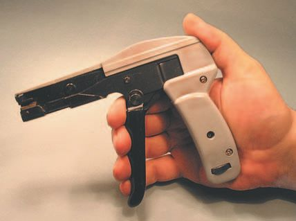
12
Audio Wiring Guide
It ’s often diffi cult to get really micro-point tools,
but you can always grind the tips down to fi t your
needs.
Heat-shrink is plastic tubing that typically
shrinks about 50% in diameter when heated. It
comes in a variety of colors, as well as clear. I
use a Master-Mite (model 100) heat-shrink gun
( Figure 1.9 ). I fi nd it a good compromise between
speed of shrinkage and possible damage to the
wire. It ’s easily available and not too expensive
(about $ 50).
You don ’t have to use any particular model,
but you must have a heat-shrink gun to do proper
wiring when using heat-shrink. It ’s not possible
to deal properly with heat-shrink without one. A
Figure 1.9
word of warning – heat-shrink guns are dandy for
Heat-shrink gun.
lighting cigarettes and starting fi res. Make sure
your gun is braced so it can ’t tip over when not in use. And remember to turn it off!
Tie-wrap guns are used to tighten and cut tie-wraps fl ush in a single operation. One type looks sort of like a gun, with a long trigger ( Figure 1.10 ). You pull on the trigger, which tightens and cuts the tie-wrap. This gun type is fairly expensive (about $ 60) but works well.
Figure 1.10 Tie-wrap gun.
1 Basic
information
13
A cheaper model is a pull-and-turn type, which cuts the tie-wrap when you twist the tool with your hand. These don ’t work quite as well, but are still acceptable. In an emergency you can pull the tie-wraps tight by hand, and cut them fl ush with a single-edge razor blade. Caution: one way or another you must cut the tie-wraps fl ush, or the sharp little nubs will draw blood when you handle the cable.
Flush-cutting wire cutters ( Figure 1.11 ) are better than any tie-wrap gun, but they require some practice to use properly. Pull the tie-wrap tight with the jaws of the fl ush cutters, and then snip off the excess tie-wrap length with them (see the description of wire cutters).
Figure 1.11 Wire cutters.
Wire cutters are also known as ‘diagonal side cutters’, and are often called
‘dykes’ (maybe from DIagonal CutterS). You ’ ll need two pairs, large and small.
If you use undersized dykes to cut large wire, you can damage or break them.
If possible, try to fi nd fl ush-cutting dykes for both pairs; they can also be used to fl ush-cut tie-wraps. Flush cutters do just that – they leave no exposed material at the cut-off point. It ’s good to reserve one pair of dykes for cutting wire and a second or third (rapidly duller) pair for prying and cutting light metal such as solder on connectors. If you buy a cheap third pair for those dulling, chewing situations, it will extend the life of your better (costlier) dykes.
A small portable vise is used to hold the work in position while you deal with it, and it ’s a big part of correct wiring. I use something called a
‘ Vacu-Vise ’ made by General Tools, but any good small vise will do. If possible, get two vises that are self-supporting – one for you and one for anyone else that does work. If you can ’t fi nd vises with a base that is already attached, mount them on small pieces of wood so they can be moved
around easily.
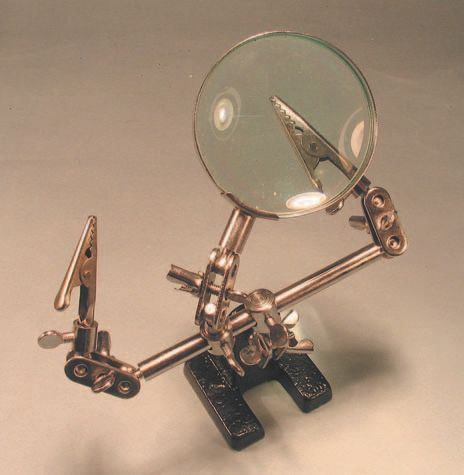
14
Audio Wiring Guide
The somewhat battered-looking vise in Figure 1.12
has been working for me for 45 years! So you can
see that buying good tools pays you back many
times over. I thought about painting it or getting a
new one, but felt that 45 years of servise gave my
old vise the right to wear its battle scars proudly.
Another very useful tool is the ‘ Third Hand ’ vise
( Figure 1.13 ). This acts as a companion to your
larger vise. The larger vise holds a connector, the
Third Hand (TH) holds the wire being soldered
to the connector. The TH unit is small – it ’s got a
mini-vise-type weighted base and two movable,
adjustable arms, with alligator clips at the ends of
Figure 1.12 Small portable vise.
the arms.
The alligator ‘ bites ’ the wire and holds it in position to be soldered. The model shown is even nicer – it has a built-in magnifi er.
Figure 1.13 Third Hand vise.
1 Basic
information
15
Professional wire people have trained themselves to work without the
Third Hand unit, but I feel it ’s a real timesaver for both pros and newbies.
The TH units are available from many suppliers. One is Shor International Corp. (914-667-1100). The URL for Shor and the TH web page is: http://
shorinternational.com/TweezersSlide.htm .
There are as many reasons to buy a volt-ohm-milliammeter (VOM) as
there are models to chose from ( Figure 1.14 ). You use VOMs for continuity checks, voltage tests and other types of troubleshooting. Thanks to cheap digital technology, you can get a decent VOM for under $ 40. Higher priced models add useful features, like an audible beep for continuity testing. The beep feature speeds up your work, so it ’s worth the difference in cost.
Figure 1.14 Volt-ohm-milliammeters (VOMs).
You can get VOMs that range from shirt-pocket units to laboratory-grade gear that does sophisticated measurements. The price range is equally
diverse, from about $ 15 to over $ 400. Tip: Get a VOM with detachable leads, since the test leads are always the fi rst thing to break. You simply can’t check your wiring without a VOM or some other type of continuity tester.
Get one each of fl at and Phillips head screwdrivers, in each of the following sizes: large, medium, small and tiny (jeweler ’s size). For slotted sizes, get a 3.0 mm, a 4.5 mm and a 5.5 mm, plus the jeweler ’s sizes. For Phillips head, get a no. 1, a no. 2 and a no. 3, plus the jeweler ’s sizes.
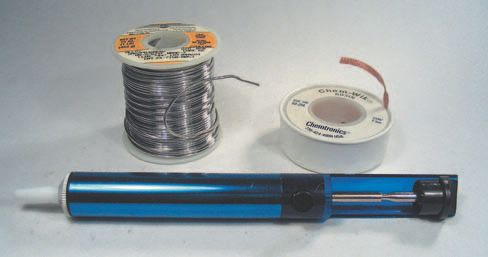
16
Audio Wiring Guide
You can get reversible point drivers, so the six types will fi t into fewer handles. Using the right size screwdriver avoids damaging the tool and the screw heads in the work itself.
In Figure 1.15 (working down from the top of the photo), you could likely get away with owning the two reversible drivers at the top, along with a jeweler’s set like the six small drivers at the bottom. The multi-head driver is handy; the others are shown as examples that might be needed for
specifi c screws.
Figure 1.15 Screwdrivers.
When you need to remove old or excess
solder, a solder sucker and/or solder-wick are
good ways to do the trick ( Figure 1.16 ). I like
the Paladin brand solder suckers; their cold
tip model is good and the heated tip model
is even better. For many applications I use
solder-wick, which is a type of braided wire,
chemically treated to absorb solder when
heated.
To use it, just place the solder-wick against
Figure 1.16 Solder sucker/solder-wick.
the excess solder and heat it with an iron.

1 Basic
information
17
The solder will fl ow up into the solder-wick by
capillary action. This method of de-soldering is
very safe and gentle.
There are a number of special tools you can make
with single-edge razor blades ( Figure 1.17 ), so
just buy a box or two; later I ’ ll describe the ways
you can use them.
You ’ ll use a small metal fi le to round off sharp
edges where you cut away soldered wires. Not
only will this avoid puncturing insulation, it will
also avoid puncturing your skin when you handle
the soldered connectors.
It doesn ’t really matter what size fi les you
Figure 1.17 Single-edge razor blades.
get – three different medium fi les are shown in
Figure 1.18 , along with the jeweler ’s set. Just
don’t get one that ’s so large as to be cumbersome when working on small parts. At the top of the picture is a 6-inch machinist ’s ruler, to give you a better sense of the size of things.
Figure 1.18 Small metal fi les.
18
Audio Wiring Guide
It ’s pretty obvious – if you ’ re going to measure things, you ’ ll need some measuring tools. Different types of tape measures are shown in Figure 1.19 , but a regular ruler is also useful. The best type is an artist ’s metal ruler about 18 inches long. And don ’t forget the 6-inch machinist ’s ruler I showed you along with all those fi les! If we ’ re going to be measuring things in {1/32} and
{1/64} inch sizes, we need a ruler marked off for such tiny amounts. Some kind of precision ruler is essential!
Figure 1.19 Tape measures.
‘ I can ’t afford to buy all those tools! ’
Well let ’s put it this way. If you ’ re investing thousands of dollars in your gear, you can ’t afford not to get these basic tools. If you don ’t have the tools, you can’t wire it. Period.
Once you calm down and start looking through your tool kit, you ’ ll realize that you own some of them already. Even if you don ’t, you can buy all the tools I ’ ve described here, and use them forever, for under $ 600.
The more tools you own (up to a point), the more work you will be able to perform yourself, thereby reducing your consultation costs by hundreds or thousands of dollars. Feel better now? Furthermore, one of the reasons that technicians charge so much money is that they have to carry tools, test gear and supplies with them. If a tech knows s/he doesn ’t have to lug all this stuff to your place, you ’ re more likely to get a break on the price of a service call.


1 Basic
information
19
Tools you can build
You can build a number of useful wiring tools yourself. Some of them are cheaper replacements for available devices, and some of them are tools you ’ ll build to do a particular job. Let ’s look at an example of each.
It ’s nice to have fancy lights for your work area, but if you ’ re on a tight budget you can create perfectly functional lighting at a fraction of the cost.
Got an old Luxo-type light that you can spare for your wiring project? Got a microphone stand? You can combine the two and make a highly functional work light, as shown in Figure 1.20 . All we ’ ve done here is stick a standard Luxo-type light on a microphone stand. But that cost a lot less than buying a fancy pedestal lamp – and you can easily take it apart when you need the Luxo for your desk and the mic stand for a session.
A home-made jacket slitter is shown in Figure 1.21 . Darn, that tiny exposed edge is hard to see! A close-up of the same contraption is shown in Figure 1.22 . You need to take care or you ’ ll surely cut yourself with it when you try and use it. OK, got it now? That tiny edge will cut you even better than it Figure 1.20 Luxo light
cuts insulation on wires.
on a mic stand.
Note tiny exposed edge at the two corners
Figure 1.21 Home-made jacket slitter.
Figure 1.22 Close-up of home-made jacket slitter.
Here we ’ ve built a jacket slitter by taping two single-edge razor blades together; notice the back (dull side) is in front of the edge (sharp side), except for a tiny exposed sharp edge at two diagonally opposite corners. It takes a bit of experimentation to get just the right amount of exposed edge showing. You want enough edge to score the outer jacket of a wire without nicking the insulation of the inner conductors. This is typically {1/64} to
{3/64} of an inch of exposed blade. It depends on the insulation thickness, and how hard you push down when you use the jacket slitter.

20
Audio Wiring Guide
Once you get the right amount of exposed blade, you can safely score
the outer jacket of a wire to strip it off cleanly and easily. And it didn ’t cost you $ 50 for a factory-made tool that still has to be set to the correct depth anyway. Practice setting the amount of exposed edge with some
scrap wire before cutting the jacket on wires you ’ ll actually be using in your installation.
Later on we ’ ll consider making more tools to speed up your wiring. But right now, let ’s talk about other materials you ’ ll need to wire.
Other necessary materials
Proper wiring requires certain materials as well as tools. Among them are heat-shrink, labels for your wires, tie-wraps and tie-wrap mounts. Never heard of them? Listen up:
Heat-shrink
This is fl exible plastic tubing that comes in various diameters. It ’s manufactured in such a way that it shrinks 40–50% when heat is applied to it. Heat-shrink is used to insulate wires. You shrink it with a heat-shrink gun, which is a glorifi ed hair dryer.
Different sizes of heat-shrink are shown in Figure 1.23 , with a side view in Figure 1.24 to better illustrate its transparency. Here some of the same heat-shrink sizes have been cut to fi t in an old pill container. I put a US penny on top of it, to show the scale of the shrink.
Figure 1.24 Heat-
Figure 1.23 Sizes of heat-shrink.
shrink with penny.
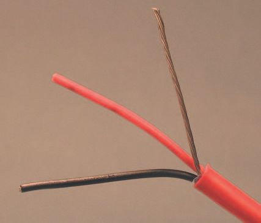
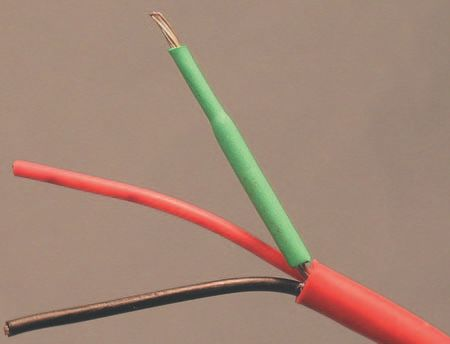
1 Basic
information
21
As can be seen in Figure 1.25 , heat has the
effect of shrinking heat-shrink – imagine that!
Keep the heat gun moving, don ’t just let it sit
in one position.
This still doesn ’t quite show you how to
use heat-shrink. So let ’s take a quick look at
heat-shrinking the end of a typical wire. This
is quite like the ‘ key frames ’ in a mini-heat-
shrink ‘ how to ’ video.
A typical wire end, stripped and ready to
shrink, is shown in Figure 1.26 . We ’ re going
to make it longer than required, so we can
later cut it to the exact lengths needed. The
Figure 1.25 The effect of heat.
drain conductor will get a thin piece of shrink, and a larger piece of shrink will go over the breakout of the conductors from the outer plastic jacket.
The same wire with the drain conductor half shrunk is shown in Figure 1.27 .
Note the difference in diameter between the shrunk and unshrunk portions.
It looks good, so we ’ re going to keep shrinking.
Figure 1.26 Wire ready to shrink.
Figure 1.27 Drain conductor half shrunk.
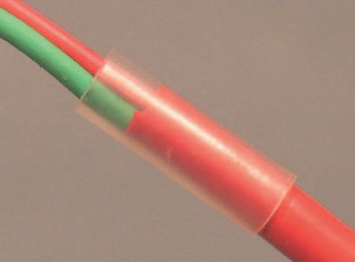

22
Audio Wiring Guide
Fix this space!
Figure 1.28 Drain conductor fully shrunk.
In Figure 1.28 , the heat-shrink is fully shrunk, but note the space that ’s opened up between the end of the shrink and the outer jacket. To fi x it, grip the exposed end of the drain conductor with pliers and push the shrink down toward the breakout from the outer jacket with your fi ngers. Do this until the shrink is fl ush with the outer jacket. Don ’t neglect this step! It ’s important in making your shrunk wires durable.
Notice how snugly the drain conductor shrink butts up against the outer jacket in Figure 1.29 . I was a good wireperson! Now we cap off the wire with a bit of shrink just wide enough to slide easily over the outer jacket.
Observe in Figure 1.30 that we leave a bit of the cap-off shrink over the inner conductors and the drain, for strength and insulation.
Figure 1.29 Cap-off before shrinking.
Figure 1.30 Cap-off after shrinking.
information
23
A burst of hot air from our trusty heat-shrink gun and the cap-off is
complete. The HS gun shown is a medium heat model, but you can still melt insulation, start fi res and burn yourself with it.
Some heavy-duty heat-shrink guns are actually paint-stripping heat guns, but caution: a paint-stripping gun can very rapidly melt wire insulation and start fi res. If you have a hard time fi nding a lighter model heat-shrink gun, a paint stripper is an acceptable alternative. But be careful!
I hope you ’ ve now gained a deep spiritual understanding of heat-shrink, and will never again mistake it for a drinking straw or a bit of doll ’s house-sized garden hose. Used properly, heat-shrink is an invaluable tool.
Wire labels
In the olden days, wires were labeled with numbered markers (Brady
markers) that were adhesive backed; then the numbered markers were
covered with transparent heat-shrink. All very slow and tedious, and what you wound up with were mysterious numbers that then had to be cross-referenced to the wires and the actual function(s) of the wires in a list or book. And God help you if you ever lost that list/book.
Fortunately, there ’s now a fast, easy, durable way to identify your wires: self-adhesive wire labels. You can write on them with a razor-point permanent marker, or print on them with an ordinary inkjet or laser printer.
The labels come in various sizes and shapes, but they all have similar characteristics. They ’ re all rectangular, with a small part of the rectangle covered with an opaque white coating. The rest of the label is clear plastic, and the entire label is adhesive backed. To use it, write or print on the white part. There is no standard numbering system for audio wiring, so you ’ ll have to use the markers in a way that makes sense for your installation.
After you peel the label from its backing sheet, stick the white part on the wire fi rst , smooth it down, and then wrap the clear ‘ tail ’ of the label around the wire and over the white part that has the info on it. The clear section acts as ‘ armor ’ over the section you ’ ve written on. The wire can then be moved or snaked through walls without damaging the new label. Very cool!
The Radio Shack version comes in small packs; the Panduit versions
come on sheets suitable for printing. The Radio Shack version is
catalog no. 278-1616 ( http://www.radioshack.com/product.asp?
catalog%5Fname CTLG & category%5Fname CTLG%5F011%
5F010%5F008%5F001 & product%5Fid 278%2D1616 & site search ).

24
Audio Wiring Guide
Panduit makes several different label sizes. The 1 inch by 1{5/16} inch size works for almost all the wires I handle. This gives a writeable area of 1 inch by {1/2} inch.
The Panduit number for a slightly larger label (1 inch by 1.5 inch) is S100X150DJ ( http://www.panduit.com/products/Products2.asp?partNum S
100 X 150YDJ & param 361 ).
A Panduit label that was printed on an inkjet is shown in Figure 1.31 . Nice, isn’t it? Sharp, clear and fast to work with. This type of label is put on wire as shown in Figure 1.32 . Stick the white part of the label on the wire fi rst. Wrap it at a right angle to the wire, so the label ’s layers overlap equally on the left and right sides of the label. Smooth out any wrinkles as you wrap it.
Figure 1.31 Panduit wire label.
Figure 1.32 Applying label to wire.

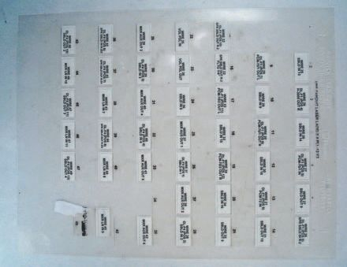
1 Basic
information
25
Figure 1.33 shows the
fi nished label: easy to
read, permanent, durable,
yet fast to change if the
need arises. Print them on
an inkjet or laser, or write
small runs by hand. An
ideal installation
tool – use them!
These kinds of labels
Figure 1.33 The fi nished label.
come on printable
sheets. Figure 1.34
shows a view of the
labels on their backing
sheet. Well, OK, it ’s
not the whole sheet –
there are a few missing.
But you get my general
drift here, right? Still,
it’s hard to see the
labels clearly. Figure 1.35
provides a closer look.
Here we can see the
labels better. The thin
rectangular box around
the printing is a line-up
Figure 1.34 Whole sheet of labels.
guide I made to align
the labels on different
printers.
Can ’t stretch your
budget for printable
wire labels? Or maybe
you ’ ve run out of labels
at 3 a.m. but just have
to get the job done?
No problem – write on
white artist ’s tape or
ordinary masking tape
and then place it around
Figure 1.35 Close-up of label sheet.
the wire.
Audio Wiring Guide
Then cover your writing with some permanent (frosted)-type Scotch tape or clear packing tape, and you have a legible, durable label. Not as good as a store-bought label, but quite workable.
One way or another you must label your wires clearly! Don ’t even think about skipping this step – you ’ ll regret it many times if you do.
Tie-wraps
Tie-wraps are long, straight lengths of plastic designed to curl around wires and lock to themselves, thereby forming the wires into a cylindrical bundle.
They come in a broad variety of sizes and lengths, so you can choose the size you need for the wire bundle you ’ re working with.
But bundling the wires is only part of the job; you must also fi nd ways to mount them. For example, let ’s say you ’ ve run and bundled your wires, but they ’ re lying loose on the fl oor. You constantly trip over them, run your chair into them, and unplug them at critical moments by accidentally pulling on them. And they ’ re beginning to show a bit of wear at the points where you keep hitting them.
How do you get the wires up off the fl oor and mount them securely? Lucky you – there are lots of ways to do it, from commercial mounts to plain old rope.
Commercial tie-wrap mounts
These come in a variety of sizes and styles. Some are adhesive
backed, some have screw-through mounting holes, and some have
both. I recommend putting screws through even adhesive-backed
tie-wrap mounts, as I ’ ve found the adhesive will inevitably fail from the weight of the wires attached to the mount. Here we consider commercial tie-wrap mounts, but don ’t limit yourself in thinking of ways to support your wires.
In Figure 1.36 we can see the duality of the tie-wrap. They are made fl at, but have to curl into hoops when used. Once the tie-wrap ’s tip (thinner end) is inserted in the clamping (thicker) end, it cannot be released, except for uncommon reusable tie-wraps. However, the details of the tie-wrap mounts aren ’t very clear, so let ’s go to our next shots.
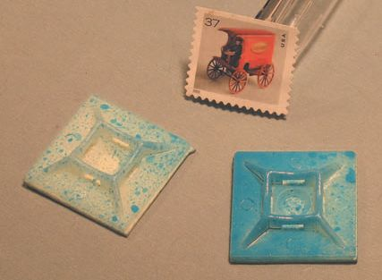
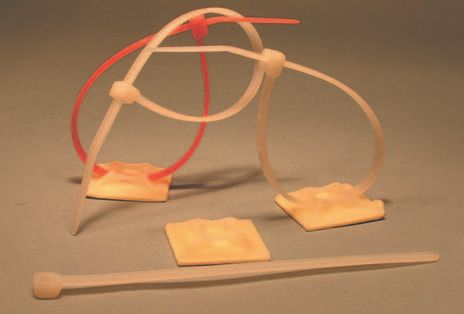
1 Basic
information
27
Figure 1.36 Tie-wraps.
Figure 1.37 Tie-wrap mounts.
The mount details are seen more clearly in Figure 1.37 . I had to spray them with blue paint to show up the detail, so don ’t expect to buy powder blue tie-wrap mounts. These mounts have an adhesive pad, slots for the tie-wraps and a center hole for a mounting screw – use it! I put in a US
postage stamp to show how big a typical mount is.
Those painted tie-wrap mounts are seen with a tie-wrap in place in Figure 1.38 . If this is still unclear, buy some wraps and mounts, play with them, and you ’ ll understand soon enough.
Figure 1.38 Mounts/tie-wrap/stamp.
Audio Wiring Guide
You can support wire in any manner that doesn ’t cause sharp edges to
contact the wire ’s insulation. You can use anything that will stay up, do the job, and not abrade the wire being held up. For example:
● Wood cut to fi t.
● Metal or plastic plumbing fi ttings (pipe holders work perfectly).
● Electrical hardware for EMT.
● Other wire.
● Any combination of the above.
● Rope. One of the best low-budget solutions is rope of various
thicknesses – non-abrasive, non-conductive, cheap and easily available.
Cut short lengths and tie them on at suitable points.
I include no illustrations of the myriad ways to support wire – they ’ d fi ll another book. Just let your budget and available materials guide you in supporting your wires. Now let ’s move on to lighting your work.
Lighting your work
Proper lighting is critical to accurate, high-speed assembly. Most people don’t think about this, and just begin work with no attempt to light it properly. When I was a production manager for Eventide, I investigated the effect of lighting on worker effi ciency.
A number of well-documented studies show that you can double or triple a worker ’s productivity with proper lighting. The problem is that to double productivity, you must increase the illumination level four-fold or more.
This means that you and your fellow workers will do best in as bright an environment as you can create. Wiring is delicate, precision work, and easily leads to eye strain when illumination levels are low. Poor lighting will also drastically increase your error rate.
This doesn ’t mean that you have to work under Hollywood Klieg lights.
But you do need bright overall illumination, and spotlighting on each work area. I like to use some central lighting in the middle of the room, and scoop lights over each workstation. The scoop lights are cheap and easy to position, since they come with clamps. Even better than scoops are Luxo-type lamps, with a swivel arm and a clamp base (remember how you put
one on a microphone stand a few pages ago?).
Organizing your work
It may sound like I ’ m overstating the obvious, but in order to work, you need a place to work . You also need places to store raw materials, documents and tools. If you don ’t put some effort into organizing the
information
29
space you work in, it will become a sort of horrid tool salad, and whatever you need most will be lost underneath everything else. You will waste hours of frustrating, counter-productive time looking for misplaced supplies and tools. Now why would you want to do that?
It ’s not hard to make a good work space. You can lay plywood over saw-horses to make a temporary work table. Use crates, offi ce furniture and whatever is at hand to create workstations. Delicate tables can be covered with heavy cardboard to create a workstation.
How you create your workstations depends somewhat on the size of the
job, and where you are doing it. Here are two examples:
While wiring an eight-track studio in a client ’s home, I put a large folding table in his living room. The wiring was done on the table, and supplies were stored underneath it. By designating a specifi c work zone, I was able to wire his studio without intruding on the other areas of his apartment. I had to convince him to leave the table up, with tools on it, for the duration of the job. Not having to set up and break down my workstation each time I was there cut dozens of hours off the job.
At the other extreme, when we wired Power Play Studios, I had the
carpenters construct work tables out of 4 inch by 8 inch sheets of plywood, mounted at desk height. Each work table provided enough space for four workstations. The legs at the corners were extended above table height, to become columns that I put scoop lights on. Each work table was then self-lit from four directions at once. Power strips were mounted on each table and then recycled into the installation when the work was done. The plywood itself, not being cut, was also recycled at the end of the job.
One way or another, you must create workstations with lighting, air and power for each worker. You also need a place to store materials and
documentation.
You must also provide adequate ventilation . Human beings are mammals, and lack of oxygen will create brain-dead behavior and cause your error rate to soar sky-high! Solder fumes are somewhat carcinogenic, and no one wants the next studio they wire to be the last.
Commercial fume-extraction devices are ridiculously expensive, but a few open windows and some well-placed fans will do almost as well, and not break your budget.
Audio Wiring Guide
Another important consideration: containerization. If you have a paper bag with 50 XLR connectors in it, you will soon have a hole in the bag from the weight of the connectors. You need to put them in a more durable container –
a small cardboard box, a plastic salad jar – whatever works and lasts.
The disposable plastic containers with lids used in delicatessens are ideal for containerization of parts. They are cheap, easily available, transparent enough to show what ’s in them, and come in a variety of sizes. The lids are useful to keep supplies in place, and lidded containers can be stacked.
What you use to hold your supplies depends on two things: what you can easily get, and your own ingenuity. But whatever you do, you have to do it!
Factories spend good money to organize tools and inventory. They don ’t do it out of altruism or consideration for their workers. They do it for the sake of productivity, knowing from bitter experience the costly results of inadequate organization. Setting up a wiring job is like setting up a miniature factory –
your need for personal organization is as great as that of any large company.
Only the scale of operation is different.
Organizing your information
Just as important as organizing your work is organizing your information in a logical and systematic way. Most jobs I ’ ve worked on have suffered from lack of organization in documentation. Important schematics were lost, parts lists were mislaid, and a great deal of totally avoidable confusion and hassle was created.
Most people start a job by just piling into it. They don ’t take the time to think about what they will need or how to do it. Result: a tremendous amount of wasted time and labor. Work has to be redone because it is wrong, and the job waits for materials that are not on site. Worker productivity is low, worker morale isn ’t much better, and quality control often non-existent.
In this section, I ’ d like to talk about planning and setting up a job to do it easily and accurately. Start with a meeting, often several, of all the people involved with the project. The purpose of the fi rst meeting(s) is to defi ne goals , methods and responsibilities .
Let ’s break these terms down. The goals of the project are what you hope to accomplish. For example, if you ’ re wiring a 16-track studio and have a low budget, you don ’t want to plan the wiring for a 24-track upgrade.
information
31
You want to be able to plan a job realistically, with the budget you have, for the results you want.
Our hypothetical 16-track studio could go bankrupt trying to fi nance a big 24-track upgrade too soon. Be sure to work with your existing equipment!
Methods are how you will reach your goals. Are you going to recycle the old wiring or start from scratch? What type of wire should you use and how much should you buy? How are you going to number the wires to keep
track of them? Where are the wires going to run – in the fl oor, in a ceiling, in a trough?
There is a long list of vital questions to answer before you ’ re ready to start wiring. We ’ ll go into these later, in more depth. For now, I only want to use them as examples of methods of work.
It doesn ’t do any good to have the wires numbered and connectorized
correctly if the wires are too short to reach from one piece of equipment to the next. So wire lengths have to be measured (and remeasured) before they are cut. This is what I mean by methods .
Responsibilities are just that. Who is going to do what part of the work and when is it going to be done? A large wiring job is far too much work for one person. But if all the workers ’ efforts are not coordinated, the result is confusion – and slow work that ends up being of poor quality.
Sound way too elementary? You reject these considerations at your peril.
Many times I ’ ve had to rework jobs because the goals, methods and
responsibilities were not clearly defi ned at the beginning. When jobs go well, be they big or small, they do so because of proper planning. Success is never an accident.
A good example is an installation I did with several other people for Power Play Studios in Queens, New York. Our crew had to design the wiring for a studio that was not yet built. We had to conceptualize the existence of a room, and placement of equipment that was not there!
We spent the fi rst two months of the project making measurements, fi nding/
ordering materials, designing the wiring scheme, and creating the work area. We took over the upper fl oor of the building the studio was being constructed in and turned it into a temporary factory. We created work zones, wiring tables, documentation, and feedback questions to the studio owner, all before we ever cut or soldered a wire.
Audio Wiring Guide
When it came time to do the wiring, we had a clear idea of how to do it, an effi cient and well-lit work area, and all the materials we needed. Each worker brought his/her personal tools, and specialized tools were purchased out of the construction budget.
As we progressed through the job, we had space to store fi nished
cables ready for check-out, without interfering with our work zones.
We could wire new cables, put them in a pile to be checked, have one
worker check and one worker connectorize – all without interfering with each other.
We consulted with the carpenters and acoustic designer, to make sure
that there were no built-in obstructions which would interfere with the placement of our wiring in the room. Troughs and tubing (conduit) were added to the construction details, to permit wire runs from one area to another.
It was a race in wiring Power Play to see who would fi nish fi rst, the carpenters or the wiring crew. The wiring crew won, with two weeks to spare!
And when it came time to lay the wiring in and test it, it all worked . This is the only time I have ever seen a job check out 100%, and I attribute that success to our careful planning and execution.
Now that we ’ ve talked a bit about the general concepts of job planning, let’s get down to the specifi cs you ’ ll need to perform the job.
Job survey and information breakdown
You need a lot of different kinds of information to perform a job correctly.
At fi rst it seems almost overwhelming. How much equipment do you have?
What type is it? What size is it? How much power does it draw? What are its input and output confi gurations and impedance? All these questions and more become vital to you. The easiest way to deal with all this is to organize it into lists and drawings.
You must have some central place to store the information you gather. I like to use a three-ring binder for documentation. By using a binder, you can insert or delete items, make copies, and organize parts and purchase lists.
This will not only help you to do a better job, but will also permit you to keep accurate track of your installation expenses.
information
33
For lack of a better name, I call the three-ring binder a ‘ work log ’. You can call it a ‘rutabaga’ as long as you create and use it. The work log and documents you create will become your single most valuable tool for doing an installation correctly! I cannot overemphasize this critical point.
How well you gather, and organize, your information is typically the key factor in doing work well, or poorly, rapidly or slowly. This is so important that I ’ m going to go into some details now, and more later, to avoid giving you a mental meltdown from information overload.
Let ’s talk fi rst about the kinds of information you need to fi nd out. Some of it is best dealt with by listing it, but some of it is easier to gather in a graphic form. For example, suppose that you want to fi gure out where to put the equipment in a control room.
You ’ ve already done your homework, and measured the size of the room, where the windows and doors are, and fi gured out the traffi c fl ow (where people walk). You ’ ve even measured each piece of equipment and made a list of the information.
Now, you want to combine the information you have about the room and
the equipment. It would be nice if the way you combined it permitted you to experiment with different placements of the equipment in the room. The question is: how do you do this?
The easiest way I ’ ve found is to make a scale fl oor plan. Take the
measurements of a room, and some graph paper (several websites let you download free graph paper in various sizes and print it out).
Establish a relationship between the size of the squares in the grid and the measurements of your room; you want to draw a fl oor plan of the room, in scale, on the size of paper that you have.
That sounds really complicated, but all I ’ m asking you to do is to make sure your picture is the right size to fi t on the paper. If you draw a room to scale, but one corner runs off the paper, it ’s hard to fi gure out what goes in that corner. This is another example of something you might think of as common sense, until you ’ ve seen some people ’s ideas of fl oor plans.
The concept of ‘ a scale drawing of your room ’ is an example of graphic information. It ’s not a list, even though it ’s drawn from the information you have compiled in lists. You don ’t have to be an artist to make a good scale drawing. All you need is:
Audio Wiring Guide
1. A tape measure.
2. A ruler.
3. Some regular 8.5 inch by 11 inch ruled paper.
4. Some 8.5 inch by 11 inch graph paper.
5. A fl at, smooth tabletop.
6. A few pencils with erasers.
7. The will to do it!
I ’ m sure a lot of you are thinking, ‘ All this scale drawing stuff sounds like a lot of work. Can ’t I just put the equipment in place and get down to wiring it? ’ The answer is: yes and no.
Often, the best arrangement of equipment is not the fi rst one that occurs to you. It ’s easy to overlook needed room for expansion, work surfaces or traffi c fl ow. Equipment is heavy and delicate; the less you move it, the happier both of you will be.
If you ’ ve wired it before you move it, you may face the unhappy prospect of major rewiring when some, or all, of your harnesses don ’t reach.
Professional studio designers work from fl oor plans or blueprints. What I ’ m trying to do is make you work like a professional studio designer in creating your own room. Like most things in life, you get out of it what you put into it – so take your time.
OK, I ’ ve convinced you to make a scale drawing of the fl oor plan you ’ re working with. It ’s a top view, looking down. You ’ ve drawn in any windows, radiators and doors, showing the opening direction of any doors. The
fl oor plan should also indicate available AC outlets and the location of any troughs. What ’s next?
Now take the measurements you made of the equipment and make scaled
shapes of them on a separate piece of graph paper. Cut them out and put them on the fl oor plan. These scaled shapes can now be rearranged on the fl oor plan until you fi nd the optimal position for all of them. Be sure to take into consideration things like, ‘ If I put this item in this spot, will I still be able to open that door completely? ’
A scaled fl oor plan takes time, true, but you can ’t wire successfully without a clear idea of where things go. And it ’s just one element in a successful studio information plan. Let ’s list the other elements now, and describe each one.
Information needed for studio installation
1. Floor plan . Top view of the room showing equipment, obstructions, windows, doors, power and troughs.
information
35
2. Equipment lists . The information needed here can often be combined into one list, with the following categories:
a. Physical dimensions
b. Power draw
c. Input/output impedance
d. Input/output connector type
e. Mounting requirements.
3. Expansion requirements . Space/power/wiring requirements for new equipment or for gear to be brought into the room on a temporary
basis.
4. Power survey . Available power in the room. Room power requirements and options in running more power into the room.
5. Air-conditioning survey . People and equipment both need air and heating/cooling. What will be needed to provide this for both control
room and studio area, as well as other work zones?
6. Soundproofi ng survey . How much soundproofi ng do you need to get along with your neighbors (or parents) and not get evicted? What
treatment do you need to prevent outside noise from intruding into the room?
7. Acoustical survey. How well can the room serve for recording and listening back to music? What treatment is needed to optimize the room?
8. Architectural survey . Is the building strong enough to permit soundproof construction? Does the building itself have enough power coming into it for your needs? Where are the plumbing lines located to provide water/
bathroom/kitchen facilities? Location of cold water pipes or ‘ I ’ beams is important in establishing ground. Availability to earth is important for driving ground spikes.
‘ Aww, gee, do I have to? ’
If this sounds like a lot of work, it is. Of course, you can have it done for you by professionals (if you have rich parents or have won the lottery recently).
Or you can do it yourself, for a fraction of the cost.
Some of you may be saying, ‘ This is supposed to be a book about
wiring! Why are you talking about all these other things? ’ The answer is, all these things are related. If there is no space to put the wires in the room, you can ’t wire it. Audio wiring needs to be kept away from AC power runs, and equipment should be connected to separate power legs from those
used for air-conditioning or lights. So all these aspects of studio construction have to be considered, however briefl y, before you can begin a successful wiring job.
Audio Wiring Guide
You don ’t have to fi nd the information in the order of my list. Start with what you know and what you can fi nd out easily. You don ’t have to be an acoustic designer to do an acoustic survey. You don ’t have to be an electrician to do a power survey. The same holds true for the other items. You don ’t have to be an architect or an air-conditioning expert either.
Most of the information required you can research yourself, especially for a small or home installation. Then if you do need to call in professional help, you will be able to talk to them in an informed manner and reduce your consultation costs.
For example, let ’s create a hypothetical home studio and see how the
information I ’ ve listed would look. I always like to think of the person I ’ m designing for, so let ’s make up a hypothetical person too. We ’ ll call him Iggy; he ’s a young musician, a college student living at home. Now let ’s think about Iggy ’s studio.
Information for Iggy ’s imaginary installation
1. Floor plan . The studio is in Iggy ’s bedroom. He will have to make allowance for the space taken by the bed and dresser, and allow room
for the door to swing into the room.
2. Equipment list .
a. Tascam DA-88 eight-track digital recorder (Iggy got it used – like the one you can see at http://www.bcs.tv/store/prod_detail.
cfm?eq_id 423209 )
b. Mackie 1642VLZ3 mixer (you can see this mixer at http://www.
boyntonproaudio.com/product-p/1642vlz3.htm )
c. Alesis Quadraverb – digital delay
d. Yamaha Rev 500 – digital reverb
e. Sony PCM 2300 – DAT recorder
f.
Philips CD Recorder CDR-770 – stand-alone CD recorder
g. Yamaha DX7-II synthesizer
h. Roland JV-880 – synth module
i.
Hafl er DH 220 – power amp
j.
Polk Model RT 25i – speakers.
Those among you who work with DAW equipment (Digital Audio
Workstations) will notice immediately that Iggy ’s studio is all discrete equipment. No DAW – at least not yet.
Iggy has a laptop and does editing with Audacity. Sometimes he
manually fl ies tracks from the laptop back into the eight-track –
he’s actually gotten pretty good at it.
information
37
And he ’ ll mix directly to the laptop, instead of to DAT on occasion, for ease of sequencing.
He’s saving up for a good computer-based DAW system that will
complement his collection of discrete equipment. He ’ ll also wire a patch bay – that ’s why he bought a copy of the AWG and met me. For now, he
uses his collection of well-chosen, robust gear. He bought most of it used, so he got a lot of bang for his buck.
Remember, this is a hypothetical studio, so I ’ m not going to list the physical dimensions of the equipment. I would like to talk, however, about the power draw, impedance and connector type of the gear, as well as the mounting requirements.
Power draw for equipment is sometimes given in watts but often given
in amps or fractions of an amp. Don ’t let it worry you; Ohm ’s law to the rescue! One of the permutations of Ohm ’s law states that ‘ amperage
voltage wattage ’ . So if a unit draws 0.5 amps and runs on 120 volts, the calculation is 0.5 120 60 watts. The voltage and current ratings of equipment are usually somewhere on the back of the unit.
The reason for calculating power draw in watts is that it ’s the easiest way to fi nd how much total power you need, and have available. A 15-amp breaker on a 120-volt line (US voltage) can provide 1800 watts (15 120 1800).
It ’s the same formula; we ’ re just using the ratings for the fuse or circuit-breaker to fi nd the total available wattage. All you have to do is fi nd the total draw in watts of your equipment and convert your fuse/circuit-breaker ratings into watts. There are other ways to fi nd total power draw, but this one is easy!
The input/output impedance of equipment is generally listed in the manual.
If you don ’t have manuals, try to get them . It will save time for both you and the techs who work with you – hours, and sometimes days, of time. Trust me. Manuals are sometimes downloadable from the manufacturer ’s website.
Connector types are in plain sight, so count them up and make lists. So many XLR males, so many females, etc. Be as specifi c as possible as to what type of connectors you have and need. Don ’t confuse mono with
stereo {1/4} inch plugs/jacks – they do different things.
Mounting requirements include not only which units are rack mount, but what gear would be best placed at a special height, or distance, from the operator.
Audio Wiring Guide
An example would be the DA-88 recorder, which should be at the correct height to see the meters, and for ease of operation when controlling it from the recorder and not the remote. For this studio, I ’ d like my carpenter friend Joe to build a special wall unit for some of the equipment. I ’ ll put the DA-88
eight-track on a typing table, next to Iggy, and have him face the wall unit which holds all the other gear.
Now back to our information list:
3. Expansion requirements . Iggy ’s friend Fred wants to bring his synth, electric guitar and a small amp over to record. Some clients will also bring gear in.
4. Power survey . There are two electrical outlets in his room which are on breaker 4 in the basement. The only other thing on breaker 4 is the
lights in the hall. The two outlets are enough for the equipment, but
he ’ ll need more power for the air-conditioner.
5. Air-conditioning survey . There ’s space to mount a small window unit, but Iggy will have to get an electrician to run a separate line for it.
6. Soundproofi ng survey. The bedroom is above the dining room in his parent ’s house. They live in a residential neighborhood in New Jersey. Iggy can’t really afford to soundproof, and he doesn ’t have the space either. So he ’ ll have to keep his monitor volume low and tell his friends with amps not to play too loud. I ’ ll have Joe the carpenter build some soundproofi ng shutters for Iggy ’s window and a baffl e to fi t over his air-conditioner. I ’ ll also have Joe reinforce Iggy ’s door and add airseals to it. Iggy is a rock musician, but some of his clients do rap and hip-hop. Iggy will have to politely explain to them that he ’s working in his parent ’s home and so can ’t listen at the levels they ’ re used to hearing when they go to clubs.
7. Acoustical survey . Iggy ’s room is a rectangle, and he doesn ’t have space or money to break up the parallelism. So I ’ ll put his speakers on wall-hung swivel mounts, to keep them away from the surfaces of the walls.
Iggy will depend on his near-fi eld monitors to work around the room
acoustic. I ’ ll also have Joe pad Iggy ’s ceiling with crushed fi berglass to dampen the high frequencies a bit.
8. Architectural survey . The house isn ’t very suitable for putting in a professional studio. Iggy will work here for a couple of years and then fi nd a commercial site that ’s better, once he ’s developed a client base.
That wasn ’t too hard, was it? Our example was a home, semi-pro studio, but the same principles of information gathering apply to any size installation.
The difference is that instead of a one-paragraph description, the
information in each category can run into many pages.
1 Basic
information
39
As a fi nal example of Iggy ’s imaginary installation, a copy of the scale drawing I had him do to fi nd the correct placement for all his equipment is included ( Figure 1.39 ). If I can get an imaginary person to do this kind of work, maybe I can persuade you to do it too.
Figure 1.39 Iggy ’s scale drawing.
Iggy was a good boy, he measured, and drew in, all the necessary details. I hope you follow his example.
‘ Now are we ready to wire? ’
Well, actually, no. If you ’ re really building a studio, you need to go through the information list and fi ll it out completely. Write down your answers in your work log. Keeping organized notes of your work is critical. Notes can be crude (like Iggy ’s drawing) but they must be accurate .
If you ’ ve been good and gathered all the information, you ’ re ready to go on to the next stage, which is fi guring out how much wire, how many connectors and other types of material you will need.
Assuming you ’ ve got all the information, you can calculate the length of wire needed to go between each piece of equipment. You can do this
on your scale drawing or measure it in real life. (An old Rasta proverb says, ‘ Measure twice, cut once. ’ ) Remember, allow enough slack in your measurements for a good service loop and the amount of wire that will have to be cut back to connectorize.
What’s a service loop? It is a comfortable amount of slack wire at the connection – enough so it can be cross-patched in case one connection is bad.
Audio Wiring Guide
You need to leave enough wire to insert/remove plugs easily, to plug to neighboring jacks, and also to allow for re-soldering of connectors at least twice. There is no standard for this, since each situation is unique, but you ’ ll soon learn to estimate how much of a service loop to add. Remember, a
little too long is a lot better than a little too short.
Add up the individual wire lengths for each piece of gear to get a total amount of wire needed. Make allowance for curvature of wire around
corners, up from the fl oor and around obstructions.
Not all the wire you need will be of the same type. My theoretical eight-track studio might use eight-pair Mogami wire to and from the eight-track, but other kinds of wire elsewhere in the system. The mixer to patch bay wiring might be best done with 24-pair Mogami. The individual effects units might be best done with single-pair wire, like West Penn 291. And I might choose to wire the speakers with Monster cable.
Once you have all your measurements and you ’ ve decided which types of wire you are going to use, you ’ re ready to draw up a materials purchase list. If you ’ re not sure what type of wire you ’ ll need, don ’t worry – we ’ ll talk about all the different kinds of wire at greater length later. The assumption I ’ m making is that you will read the entire book before wiring your studio.
That’s not too much to ask, is it?
Right now, we ’ re talking about what your next step would be if you knew exactly what you wanted to build. You ’ re probably not sure yet of what you want to wire and/or construct. But you can start the materials list in a general way and fi ll in the details later.
Revisions are a part of any job, so set up your lists with plenty of blank space and skipped lines for changes and writing in details like sources.
Or, do what I do, and slam the whole thing into a computer, in a
spreadsheet like Excel, where it ’s easier to update. And by the way – can you spell back up ? Regularly. On CDs or fl ash drives or whatever they ’ ve invented lately.
There ’ ll be a whole section on using spreadsheets later; this is still the basic information zone, OK? And handwritten lists are often the raw information you need to make a great spreadsheet that clarifi es the job. Don ’t be afraid to gather data any (and every) way you can.
1 Basic
information
41
Include all the different types of wire in the materials list, and be sure to buy 15% more than you think you ’ ll need. You can always cut it back, but splicing in the middle of a harness is diffi cult.
The same applies for connectors. Add up all the connectors you need,
in all their different types, and then add at least four more of each small connector type – maybe three more of expensive multi-pin connectors.
This is especially true for those of you who live far away from major supply centers. If you ’ re buying materials mail-order and have to wait for three connectors to fi nish the job, you won ’t be happy.
We ’ ve talked enough (for now) about information you need to fi nd out and organize. Let ’s move on to some basic wiring techniques.
Stripping wire
There are several different types of wire you ’ re likely to encounter, and a variety of methods for stripping wire. I ’ m going to describe each in some detail, because the methods needed depend on the type of wire you ’ re working with.
I talked about these kinds of wire in the beginning, now I want to go into more depth. This approach of multiple exposures to information will make it easier to understand, and retain, what I show you.
One of the most common types of wire used in studios has a mylar foil shield around the inner conductors. The mylar is blue on one side and silver on the other. The blue side is insulated (that is, it does not pass electricity) and the silver side is conductive (it does pass electricity).
The silver side is wrapped around the inner
conductors of the wire, including the drain
conductor – which has no insulation. Since the silver
side of the foil is conductive, it makes excellent
contact with the drain conductor, thus providing an
effective electrostatic shield for the inner conductors.
Look familiar? The example in Figure 1.40 is of a
typical single-pair wire, but foil is also used as an
outer shield around multi-pair wire. The foil does a
good job as a shield, but it ’s fragile – if you fl ex the
wire often, the metal on the foil breaks down and
the wire becomes noisy and microphonic.
Figure 1.40 Foil-shielded wire.

42
Audio Wiring Guide
So foil-shielded wire is best suited to fi xed parts of your installation rather than use in microphone cables and other wires which are constantly being moved and fl exed.
More effective for mic cables is spiral strand shield wire – wire that has bare strands wrapped around the inner conductors ( Figure 1.41 ). This style of shielding is also used by some wire manufacturers (Gotham and Mogami)
for multi-pair cables. Spiral strand shield wire is more expensive, but also more effective and durable.
Figure 1.41 Spiral strand shielded wire.
Figure 1.42 Braided strand shielded wire.
Braided strand shielded wire ( Figure 1.42 ) is an older type of wire construction; it ’s commonly seen in elderly mic cables, guitar cords or cables for vintage condenser microphones. While it ’s strong and has a good shield, it’s a royal pain to deal with, as it must be carefully unbraided a little at a time in order to be properly connected. The best way to unbraid it is to use a small pointy object like a dry-wall screw or a sharply pointed nail, or even the awl tool on your Swiss army knife.
One of the few advantages to this type of wire is that it will hang straight down, without twisting – useful if you ’ re hanging microphones from a tall ceiling and for installations in concert halls, where mics are hung permanently. Otherwise, avoid this type of wire – it ’s so tedious to work with that you ’ ll lose a lot of time in your wiring.
1 Basic
information
43
Figure 1.43 Multi-pair wire.
Multi-pair wire ( Figure 1.43 ) may have either a foil or stranded shield for each pair. Some types have a secondary foil layer wrapped around all the pairs for additional noise shielding. Multi-pair wire is commonly used: 1. Where a large number of wire runs are going along the same path, as from a console patch bay to an outboard equipment rack.
2. For multi-track recorders going to/from consoles.
3. For long microphone snakes going to stage boxes.
No matter what type of wire you ’ re working with, the goal is always the same: to strip off the outer insulating jacket without harming the delicate insulation of the inner conductors. There are a couple of ways to go about this, so let ’s talk about each one.
Miller-type wire strippers can be used to remove a short length of the outer jacket. This is best done by adjusting the depth-of-cut on the wire strippers to go almost through the outer jacket. Then grasp the wire with the jaws of the strippers at the cutaway point, clamp down the jaws on the wire and use a rotating, rocking motion to chew most of the way through the outer insulation jacket. If you ’ ve done this correctly, you now have a deep groove in the outer jacket, but you have not cut so deeply as to harm the inner conductors.
Now release the jaws of the stripper and move them slightly toward the end of the wire. Clamp down again, a little less tightly, and bend the wire back and forth at the cut you just made; then fi nish breaking away the outer jacket. Finally, pull fi rmly with the stripper ’s jaws toward the end of the wire, to pull away the section of outer jacket you want to remove.
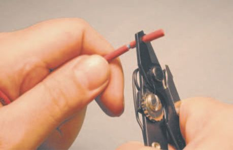
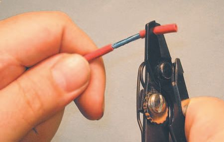
44
Audio Wiring Guide
Caution here: The ‘ intuitive ’ thing to do is to make the rotating cut and then pull, taking off the outer jacket at the wire ’s end. But I ’ m asking you to do this in two steps. Why not just
pull with the jaws of the stripper inside the
cut made in the outer jacket? Because the
stripper jaws could then gouge the insulation
of the inner conductors. My way is a little
slower, but a lot safer! Practice this several
times with a 1-inch (2.54 cm) strip-back
each time.
If you ’ ve done this operation correctly, you
should now have an exposed section of the
inner shield, with no nicks or gouges in it.
The examples in Figures 1.44, 1.45 and 1.46
show this being done to wire with a mylar foil
shield, but the procedure is the same for wire
Figure 1.44 Cutting outer jacket.
with a spiral or braided shield.
Figure 1.45 Removing cut section – 1.
Figure 1.46 Removing cut section – 2.
There ’s an easier and faster way to do this strip off of the outer jacket – you can combine the small vise you bought with a single-edge razor blade to create a highly effective stripping tool. Mount the razor blade in the vise so that a very small amount of the blade ’s sharp edge is exposed along the top of the vise. Typically you ’ ll leave about {1/64} inch (0.0397 cm) to roughly
{1/32} inch (0.0794 cm) of the blade exposed.

1 Basic
information
45
Note in Figure 1.47 that I ’ ve taped the end of my fi nger so I can touch the edge of the blade safely, without cutting myself. I can now safely and repeatably adjust the height of the blade until it ’s correct for the particular type of wire I ’ m stripping. Please be careful when creating and using these special tools. Razor blades will cut you even better than they will cut insulation, so use them carefully! Further, you use them at your own risk. If you are injured, killed or bleed all over your equipment, the authors and publisher will disavow your actions.
Figure 1.47 Mounting blade in vise.
Press the wire down onto the exposed edge of the razor blade and carefully roll it back and forth ( Figure 1.48 ). Keep the downward pressure constant and keep your fi ngers away from the edge of the blade! Also, keep the wire exactly at a 90-degree angle to the edge of the blade, so as to avoid making a spiraling cut. This will (if properly done) create a perfectly smooth and accurate cut in the outer jacket – far cleaner than is possible with any other method!
Figure 1.48 Cutting outer jacket with blade in vise.

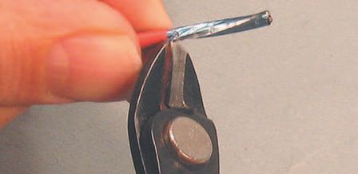
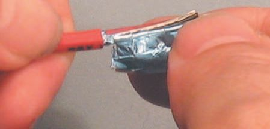
46
Audio Wiring Guide
Figure 1.49 Removing cut section – 1.
Figure 1.50 Removing cut section – 2.
Now pull the wire (and your fi ngers) away from the blade/vise combination ( Figure 1.49 ). Flex the wire at the cut point to fi nish breaking away the outer jacket. Finally, pull the cut section off the end of the wire with your fi ngers ( Figure 1.50 ). If the depth-of-cut on the razor blade is correct, this can be done with minimal effort. With a little practice you can do this operation three or four times faster – and far more neatly – than someone stripping the outer jacket off with regular wire strippers.
Once the outer jacket is removed from the end of the wire, you will see either the mylar foil shield, a spiral wrap stranded shield or a braided strand shield.
With mylar foil, to cut away the foil pull down on the outer jacket
toward the middle of the wire to expose a little more of the foil than is now visible – say, {1/8} inch (0.317 cm) more exposed foil. Holding the outer jacket in place with one hand, nick the foil with a pair of wire cutters or another razor blade ( Figure 1.51 ).
Figure 1.51 Nicking foil shield.
Figure 1.52 Tearing off mylar foil.
Now tear away the foil at the point you nicked ( Figure 1.52 ). If done correctly, the foil will come away cleanly and the outer jacket will push slightly back toward the end of the wire, covering the point at which you removed the foil. This will provide insulation and strain relief inside the connector you will later attach to the wire.

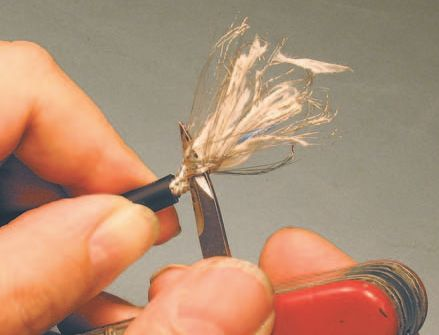

1 Basic
information
47
With a spiral strand shield, the operation is essentially the same as with mylar foil, but you won ’t have any foil to remove. Instead, pull on the shield strands and lead them away from (at right angles to) the inner conductors ( Figure 1.53 ). Don ’t twist them together yet; they may be more manageable in an untwisted state. Again, pull down on the outer jacket slightly and pull the shield strands together a little below the cut-off point on the outer jacket. This will keep the shield strands nicely bunched together for you to work on them later. Cut away any strands of insulation exposed during this operation with a small pair of wire cutters (dykes).
Figure 1.53 Pulling shield strands.
Figure 1.54 Pushing down braided shield.
Should you be unfortunate enough to have to deal with braided shield strand wire, you must carefully and gently unbraid the shield, three or four strands at a time. Once you have all the shield strands unbraided, down to the cut-off point of the outer jacket, gather them together and lead them away from the inner conductors. This is shown in Figures 1.54, 1.55 and 1.56.
Figure 1.55 Unbraiding shield – 1.
Figure 1.56 Unbraiding shield – 2.
48
Audio Wiring Guide
Hold the outer jacket in one hand and push down on the braided shield
with the fi ngers of the other hand, forcing it to compress toward the cut-off point. This loosens the shield and makes it easier to unbraid.
Gently and carefully, slowly unbraid the shield conductors. Try very hard not to lose any in the process. Keep going, you ’ re almost done! Unbraid the shield all the way down to the breakout point (where the outer jacket was cut away).
You ’ ll then be left with a lot of fuzzy, stringy insulation to get in the way of your soldering. Carefully cut it all away with a small pair of wire cutters. Try to remove all the insulation – it can foul a solder joint you create and make it unreliable.
Carefully separate the wire strands from the fuzzy, frizzy packing strands (the non-electrical stuff; Figure 1.57 ).
You may, or may not, be able to pull down on the outer jacket, depending on the type, age and condition of the wire. If possible, pull the outer jacket down and unbraid a little below the outer jacket ’s cut-off point. If you can ’t pull it down, just unbraid right down to the cut-off point. Again, your goal in unbraiding the shield is to lose as few of the strands as possible – ideally, none.
Figure 1.57 Separating strands.
1 Basic
information
49
After tucking the inner conductors and shield
out of harm ’s way, carefully cut away all
the exposed insulation ( Figure 1.58 ). Make
absolutely sure that you ’ re not cutting the
conductors/shield, or you ’ ll get to do the
whole strip-out over again with a slightly
shorter wire.
OK, you ’ ve practiced stripping the outer
jacket off some scrap wire. You ’ ve done it
several times – as many as it took to learn to
do it properly. What next?
Figure 1.58 Cutting off insulation.
The next step is to strip back the inner
conductors of the wire a small amount.
Typically, an {1/8} inch or less strip-back will give you enough of the exposed strands to tin and solder them properly. One exception to
this is old-style RCA male plugs, which must be stripped longer.
RCA connectors are covered in their own section, so I won ’t
digress here.
I recommend using a pair of wire strippers for cutting the insulation on the inner conductors. If you ’ ve adjusted your wire strippers for the outer jacket insulation, you ’ ll need to readjust them to the correct size for the insulation on the inner conductors. This can get pretty tedious, so I recommend having two pairs of wire strippers. Set one pair for your
outer jacket thickness and the second pair for the insulation of the inner conductors.
Remember that mylar foil shield wire I fi rst showed you? I ’ m going to go back to it now and we ’ ll ignore braided shield wire for a bit. It ’s way too slow to work with for large numbers of connections. Foil shielded wire is the most common type for fi xed installations, so I ’ m going to show you the next techniques on that type of wire.
Our fi rst step is to cut the inner conductors, and drain wire, to a suitable length for the connector(s) you ’ re wiring. Our example here is for an XLR, so they can be pretty short. I ’ ll tell you just how short at the end of the sequence (no peeking ahead now).
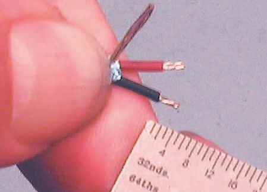
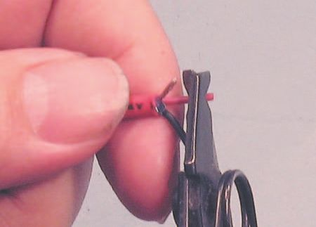
50
Audio Wiring Guide
Watch what you ’ re doing, and cut all three conductors to the right length ( Figure 1.59 ). Mistakes here are irrevocable except by redoing the whole process.
Figure 1.59 Cutting inner conductors.
Set a pair of strippers for the inner conductors and strip back a small amount of insulation, about {3/32} inch ( Figure 1.60 ). The insulation will
‘ wick back ’ when the strands are soldered, exposing more of the strands than you ’ ve stripped.
Figure 1.60 Stripping inner conductors.
Figure 1.61 Finished length (for XLR).
The fi nished strip-off is shown in Figure 1.61 . Well, almost – there ’s that little bit of mylar foil to cut away. This is a typical length for an XLR plug – either male or female. The exposed strands of the inner conductors are about {3/32}
inch and the insulated length of the inner conductors is around {7/32} inch.
information
51
For a physically strong connection, your tolerances on this connector should not vary more than {1/16} inch. Oodles of room!
What you ’ ve just seen and read gives you the rudiments of stripping wire.
Now it ’s up to you to use this information and practice it. Take some scrap wire and practice stripping it back a few times. You are ready to move on when your stripped back wires are clean and accurate, with no nicks or gouges. If you need to practice more, please do so now. Reading and talking about an action are no substitute for actually doing it!
You don ’t learn to ride a bicycle by reading about riding bicycles. You learn to ride by getting on the bicycle and falling down, picking yourself up and trying again. Similarly, you will only learn to be a good wireperson by doing it – there simply is no other way.
If you ’ ve followed instructions, and practiced your new skills a bit on some scrap wire, you ’ re now ready to learn the next steps – dealing with multi-pair and tinning wire.
Tinning wire is the process of coating it with a layer of molten solder, which also fl ows in between the copper strands of the conductors. It makes the wires easier to solder and also makes for a better connection. The process name comes from the fact that the basic alloy of solder is a tin/lead combination.
This alloy is improved by the addition of a small amount of silver.
Normally, you would only tin wire when you are ready to attach it to the connector. But just as you practiced stripping wire, it ’s important for you to practice tinning wire.
Getting impatient? Take a deep breath. Drop your shoulders. The time
you take to read and practice now will be paid back many times over in your actual installation. Not only will you be faster, but the quality of your workmanship will be much better.
Dealing with multi-pair wire
All of the instructions up to now have dealt with putting one connector on one wire – which is the most basic form of wiring. But what if you ’ re dealing with multi-pair wire which has many discrete wires bundled together in an outer jacket? In that case, you might have up to 32 individual wires inside an outer jacket.
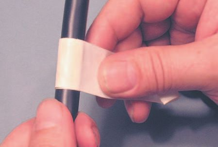
52
Audio Wiring Guide
To work on multi-pair wire ( Figure 1.62 ), you
must fi rst remove a suitable length of the outer
jacket without harming the insulation of the
inner wires. This is almost impossible with most
commercial wire strippers, but is done easily
with a little practice and the special ‘ home-
made jacket slitter ’ explained on page 19
of this section. If you haven ’t already made
the jacket slitter, please do so now, before you
continue.
After you ’ ve made your own home-brew
jacket slitter, you ’ re ready to use it on some
multi-pair wire. Make sure the amount of
exposed blade is small enough to not harm
Figure 1.62 Back to multi-pair wire.
the insulation of the inner wires. Typically, an
exposed edge of {1/64} inch (0.0395 cm) to
roughly {1/32} inch (0.079 cm) of the blade
should be left visible.
Practice using the jacket slitter on some scrap wire before you try it on your multi-pair wire – this is the only way you ’ ll avoid mistakes and damage to your new wire!
The next step is to fi gure out how far back to
strip off the outer jacket of the multi-pair wire.
Typically, this will be 1–3 feet (30.48–91.44 cm)
but will vary greatly with your particular
installation.
Measure off the amount you want to strip back
the outer jacket and put a couple of turns of
artist’s tape or masking tape around the outer
jacket of the multi-pair just past the point you ’ ve
measured ( Figure 1.63 ). This tape will act as a
guide when you score the outer jacket with the
jacket slitter. Make sure the tape is exactly at a
Figure 1.63 Taping wire at cut-off point.
right angle to the wire.

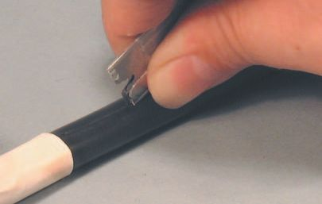
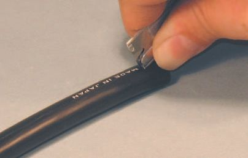
1 Basic
information
53
Grasp the jacket slitter between thumb and forefi nger in such a way that your fi ngers will slide along the wire and act as a guide for the slitter ( Figure 1.64 ). Note that the slitter is at an angle to the work ’s surface. By varying the angle, and the force of your cut, you can adapt perfectly to different types of wire with different amounts of outer jacket thickness ( Figure 1.65 ).
Figure 1.64 Correct grip of slitter.
Figure 1.65 Starting cut of outer jacket.
Run your fi ngers and the slitter lightly along the wire from your marked point in a straight line to the end of the wire – in other words, parallel to the wire, from the mark to the end of the wire. Bear down more on the blade at the very end of the wire – this will help you start the tear-off of the outer jacket.
Keep working down the wire with the same pressure and angle of cut
( Figures 1.66 and 1.67 ). The ideal is that the outer jacket is 70–90% cut through, without the slitter ever actually touching the shield or inner conductors. I can do it every time. You can too, if you concentrate!
Figure 1.66 Continuing cut with slitter – 1.
Figure 1.67 Continuing cut with slitter – 2.
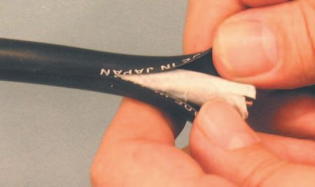
54
Audio Wiring Guide
Don ’t stop in the middle for a smoke. Don ’t vary the pressure or the angle of your cut. Bear down hard at the last {1/2} inch to be cut. This will make the outer jacket easy to tear at the end of the wire.
Still grasping the slitter properly, make a circular cut around the outer jacket just above the tape you placed on the outer jacket earlier ( Figure 1.68 ).
Make sure the ends of your circular cut match up and mate, so the cut-off is always at a right angle to the length of the wire. Use the tape as a guide to help you do this.
Figure 1.68 Rotary cut at breakout.
Now go to the end of the wire and break open the insulation at the scored point with a pair of dykes (wire cutters). If you ’ ve done all the above operations correctly, the outer jacket of the wire can now be torn (peeled) off the bundle of wires by hand. Peel it all the way back to the cut-off point you marked with tape ( Figure 1.69 ).
Figure 1.69 Peeling back outer jacket.

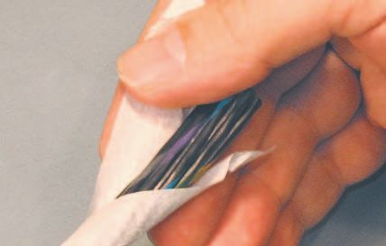

1 Basic
information
55
Figure 1.70 Tearing outer jacket at cut-off point.
Figure 1.71 Pulling back outer jacket.
After you ’ ve peeled back the outer jacket to your cut-off point at the tape (along with the circular cut you made there), cut gently along the circular cut you already made, so you can tear away the outer jacket with your hands.
Then tear the jacket away ( Figure 1.70 ).
Pull back hard on the remaining outer jacket to expose more of the bundled wires underneath ( Figure 1.71 ). This extra pullback adds strength to any strain relief attached to the outer jacket of the wire. Cut away any paper (or other) insulation exposed by removing the outer jacket.
Figure 1.72 Removing bundle wrapping.
Figure 1.73 Cutting away insulation/wrapping.
Typically, the fi rst thing you ’ ll see after removing the outer jacket of multi-pair is some kind of wrapping around the wires inside ( Figure 1.72 ). It may be paper or plastic, but it was put there to help form the wire when it was made. We don ’t need it, so cut it ruthlessly (but carefully) away ( Figure 1.73 )!
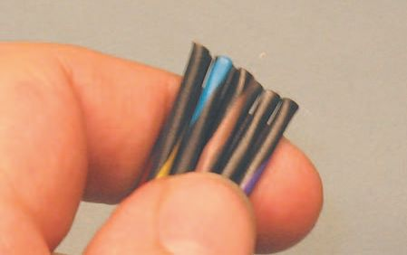
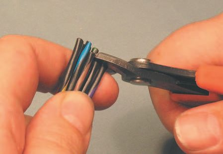
56
Audio Wiring Guide
Take the wires you ’ ve now exposed and unspiral (untangle) them, so they lie as fl at as possible ( Figure 1.74 ). The ends of the wires will be different lengths now, because they were wound around each other in a particular way when the wire was formed.
Figure 1.74 Untangling wires of the multi-pair.
Now use a pair of wire cutters (dykes) and cut back the ends of the
individual wires, so they are all equal (or very close to equal) in length. This process is called ‘ justifying ’ the wires ( Figures 1.75 and 1.76 ).
Figure 1.75 Equalizing (justifying) length of wires.
Figure 1.76 Fully justifi ed wires.
1 Basic
information
57
Congratulations! Your multi-pair wire is now ready to be connectorized or made into a snake. One last caution – the insulation of the inner wires in multi-pair is very thin and the wires themselves are small and fragile. Be nice to them.
For this reason, it ’s sometimes helpful to add a cap-off of heat-shrink at the end of the wire, so strain reliefs have something to grab onto. This is true even when there is no other heat-shrink used in the wiring of a connector, and especially true with thin multi-pair wire.
Figure 1.77 shows our old friend from the heat-shrink discussion. Even without the green (drain conductor) heat-shrink, the wire cap-off shrink adds strength and thickness for strain reliefs to ‘ bite ’ on.
Figure 1.77 Heat-shrink cap-off on wire.
Now that I ’ ve shown you how to strip both single- and multi-pair wire, it ’s time to talk about the next step in preparing your wire for soldering and connectorization – tinning.
Tinning wire
Take the time now to set up a practice workstation. Light it properly, provide for adequate ventilation and a good work surface. Run
some AC power over to it, put your soldering iron in its holder,
place your tools within easy reach and your vise in front of you.
Audio Wiring Guide
Caution: get a pair of safety glasses and wear them at all times when
soldering.
You ’ ll also need some solder to practice with, along with that bit of scrap wire.
I recommend using 62/36/2 solder instead of the standard 60/40 blend. The numbers refer to the percentage of tin/lead/silver in the solder alloy. Solder that is 60/40 or 63/37 has no silver in it, only tin/lead. I ’ ve found that 62/36/2
solder makes better connections and is easily available from Radio Shack. The catalog number is 64-013 (URL: http://www.radioshack.com/product.asp?cata log%5Fname CTLG & category%5Fname CTLG%5F011%5F009%5F007%5F
001 & product%5Fid 64%2D013 & FGL 1-001).
If you can ’t get solder with 1–2% of silver in the alloy, try to get a 63/37
blend of tin/lead. Even that slight change in the solder alloy will make for better connections.
Caution: be sure to use rosin core solder rather than acid core solder.
Acid core solder is designed for plumbing work and will destroy any
electronic equipment that you use it on! Wires are no exception.
Solder comes in different thicknesses, just like guitar strings. I like to use a medium-gauge solder, around 0.050 inch (0.127 cm) for soldering connectors. The really thin types of solder are designed for fi ner work, like soldering components to a printed circuit board (PCB).
Just as you can get a better or worse tone for playing specifi c music with a certain size guitar string, you ’ ll get better or worse results soldering specifi c components with different sizes of solder.
Medium-sized (connector gauge) and tiny (transistor gauge) solders are illustrated in Figure 1.78 . The thin transistor gauge solder is really hard to see! A close-up is shown in Figure 1.79 . That ’s better! The thin solder is about the size of heavy sewing thread, so the big stuff isn ’t really all that huge. The actual diameters are 0.050 inch for the medium gauge and 0.015
inch for the tiny stuff. Yikes, that ’s small!
A couple of useful tips:
1. If you only have very thin solder, and are wiring heavier work, take the solder and double a length of it over itself one or more times. Then twist the solder together and hey presto – thicker solder that suits your work.
2. If you have solder that ’s too thick for your work, apply it in tiny dabs to the components being heated.

1 Basic
information
59
Figure 1.78 Two sizes of solder.
Figure 1.79 Solder close-up.
Time to practice tinning
‘ Tinning ’ means putting a little solder on the tip of the iron and allowing it to melt, so that molten solder will fl ow more easily. That ’s tinning the tip of your soldering iron.
However, like so many wiring terms, tinning has more than one meaning.
Tinning wire is the process of coating it with a layer of molten solder, which also fl ows in between the copper strands of the conductors. Doing this makes the wires easier to solder and also makes a better electrical connection.
Remember when you practiced stripping the inner conductors on a wire?
Take that wire and mount it in the vise. Plug in your soldering iron and allow the tip to come up to heat. Put some solder on the tip of the iron and allow it to melt. You do have those safety glasses on, right?
Wipe off any excess solder or rosin with your soldering sponge, but allow a small amount to remain on the tip of the iron. The fresh solder on the tip of the iron provides a ‘ wetting ’ action so that molten solder can fl ow easily from the iron tip onto the work being soldered.
Place the iron ’s tip on the exposed strands of the inner conductors and hold it there a few seconds to allow the metal of the conductors to come up to heat. Apply a small quantity of solder at the point of contact between the iron and the strands of the conductor.
60
Audio Wiring Guide
Once the solder has begun to melt, move the contact point of the solid solder and the soldering iron tip along the strands you are tinning. Use just enough solder to fl ow evenly onto the strands of the conductor without leaving blobs of solder.
Some people will say that you should apply solder only to the wires being heated and not at the point of contact by the iron ’s tip. But I ’ ve found this technique less satisfactory, because the strands of the conductor become overheated and tend to melt the insulation jacket.
Keep practicing tinning wire until you can
produce a smooth, even coating of solder on
the strands of the inner conductors without
excessive melt-back of each conductor ’s
insulating jacket ( Figure 1.80 ).
Some types of wire use insulation with very
poor thermal stability, so the melt-back or
‘ wicking ’ will seem excessive, no matter how
careful you are. When working with this type
of wire, you must allow extra length in your
strip-back for the strands you will cut away
after they are tinned.
If you need to strip some more scrap wire to
Figure 1.80 Tinning inner conductors.
practice on, please do so now.
Tinning (fi lling) solder cups
Good, we ’ ve got the wire ready and you know how to deal with it. Now let ’s prepare a typical XLR connector for soldering.
There are two ways to approach this situation. One is the ‘ old-school ’
method of pressing the conductors into the solder cups with one hand,
feeding the solder in with another hand, and using another hand to hold the soldering iron. If you ’ ve been counting, that ’s three hands, which is hard for most folks.
Now you could use the Third Hand vise I showed you, or two small regular vises. Even tape the wires onto something to position them while soldering.
1 Basic
information
61
I ’ ve done all those things, and been happy I was able to do them. But there ’s an easier way.
Suppose you could load each solder cup with just the right amount of
solder. And your solder was of high enough quality to take reheating
(once) without degrading its conductivity or strength. Often, that ’s what production-line solder people do: pre-load the connectors with solder, tin the wires, and then quickly reheat the loaded solder to insert the conductor’s strands into the solder cup.
I ’ m now going to give you a brief look at this ‘ secret ’ procedure for connectorizing. Later, in our section on actual soldering, we ’ ll revisit this technique. Right now, I just want to give you an overview, the big picture, before we dive into itty-bitty details.
Place the iron ’s tip against the solder cup in a way that maximizes the contact between the two ( Figure 1.81 ). This will heat the cup in a few seconds. Then feed the solder into the cup, allowing time for it to melt, and fl ow. Sometimes an air bubble can get trapped in the cup; if that happens, allow the bubble to burst, then add a little more solder to fi ll the cup.
Figure 1.81 Filling solder cups of XLR.
62
Audio Wiring Guide
The ideal is that each cup is full enough to surround the strands inserted into it, but not so full as to overfl ow when the strands are pushed home.
Think of a rounded teaspoon of sugar – rounded, but not heaped, if you see my point.
In Figure 1.81 only one of the three cups being fi lled is shown, but of course for this technique to work, all three have to be prepped (that ’s wirespeak shorthand for ‘ prepared ’ ). Got those solder cups tastefully fi lled? Nice bright, shiny solder, with a bit of rosin left on for the reheat? Good! Now let’s attach a conductor to a solder cup.
Inserting conductor strands
No, that ’s not a suggestive title, it ’s just what you ’ re doing at this step –
honestly. Place the iron tip across the cup to heat both the cup and the solder. Wait one or two seconds after you see the solder melt and start to fl ow. This allows all of the solder in the cup to become molten. Then quickly push the strands into the cup ( Figure 1.82 ). Push them in until the conductor’s insulation is fl ush to the rim of the cup. Rapidly slide the iron away with a sideways motion (don ’t lift it).
Figure 1.82 Inserting strands into hot cup.
If you ’ ve done all this correctly, and held the conductor in place for a few seconds while the solder cooled, you should be rewarded by a chrome
fender bright solder joint, with excellent strength and conductivity.
information
63
In Figure 1.82 only one conductor is shown being soldered, when in reality all three must be soldered. But you knew that, you were just waiting to see if I ’ d forget to tell you, right?
Congratulations! If you ’ ve got this far and practiced the techniques I ’ ve described and illustrated, you ’ re now almost ready to begin wiring.
Designate a few connectors of each type for practice, and work with them before actually starting the wiring of your installation. This will save you some ruined connectors and a lot of frustration.
The wiring techniques for each individual type of connector are contained in later sections in this book. Select the sections that contain the types of connectors you ’ ll be working with and study each one carefully.
But , before you rush off to start wiring things, please check out Section 2 of the AWG. That ’s the Intermediate Information section, and there are a few things I ’ d like to show you there, before you start chopping.
The last technique I want to talk about in this section is that of de-soldering.
If you practice on a few connectors, it would be useful (and cheaper) if you could do so several times on each connector. And suppose you make
a mistake on a ‘ real ’ connector? So I ’ m going to show you a rapid and effective way to de-solder connectors. Remember those safety glasses I told you to purchase? Now is a great time to put them on, if you ’ re not still wearing them.
Now let ’s de-solder
After you remove a conductor from a connector, a thin coating of solder will always remain on the conductor. In addition, the majority of the old solder will remain in the solder cup and must be removed.
To de-solder is to take away the bulk of the old solder by a variety of means.
The goal is to remove the majority of the old solder, without damage to either the insulation of the conductors or to the connector itself. This is necessary because reheated/contaminated solder makes a poor electrical connection, and is also physically weak.
It ’s OK to leave a light fi lm of solder on both the conductor and the solder cup. This actually aids the re-soldering process and is, in any case, impossible to remove.
64
Audio Wiring Guide
Let ’s use an XLR male plug as our fi rst example. It has some conductors attached to it which we want to remove along with the old solder in the solder cups.
Mount the connector (after removing its shell) in the vise. Tighten the vise jaws on the Pin 3 contact of the plug or on the plastic surrounding all the pins. If you tighten the vise jaws across the Pin 1 and 2 contacts of the plug, they may become loose or misaligned when you start to de-solder
the conductors. The plastic in which the contact pins are embedded is
somewhat thermoplastic in nature and will fl ow when heated. Then the pins will become loose or misaligned – not a good thing.
Grasp the most convenient to you of the conductors with the tip of a pair of small needle-nose pliers. While holding the conductor with the pliers, heat the solder cup the conductor runs into. Pull the conductor out of the solder cup once the solder has become molten. Perform the same actions for the other two conductors.
In Figure 1.83 Ken ’s camera got me just as I ’ d pulled the conductor out of the center solder cup (Pin 3). And yes, you have to do them all.
Figure 1.83 Removing soldered conductors.
Now you have a plug that ’s free of conductors, but you still have the old solder in the solder cups. It ’s been used and contaminated; you ’ d like to get it out, but how?
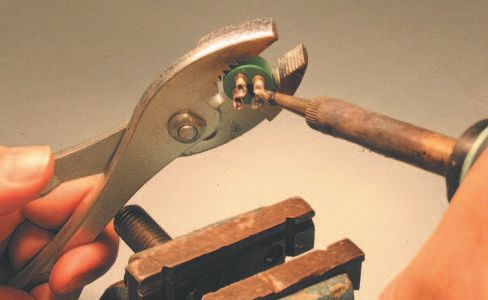
1 Basic
information
65
Remove the connector from the vise and grasp it by the plastic with your pair of slip-joint pliers ( Figure 1.84 ). Hold the connector so that the solder cups face toward you. Heat any of the three cups with the tip of your
soldering iron and, while the solder is still molten , slam the pliers down against the edge of the vise! Make sure you hit the vise with the edge of the pliers and not the edge of the connector ( Figure 1.85 ).
Figure 1.84 Heating solder cups.
Figure 1.85 Hitting vise to expel solder.
This action will cause the molten solder to fl y out of the solder cup and (hopefully) down onto the vise or the tabletop. Keep those safety glasses on – and while I ’ m on the subject, it ’s not a good idea to do this while you ’ re wearing shorts. It ’s far less painful if stray drops of solder hit the fabric of your trousers than if they hit your bare skin.
66
Audio Wiring Guide
Repeat this operation for both of the other two solder cups in the
connector. The plug will now be quite hot, so let it cool for a few minutes before you attempt to handle it.
De-soldering other types of connectors is similar, but the exact details will vary from connector to connector.
You can also use a solder sucker or solder wick to remove the solder
from the cups. But what if you run out or can ’t buy any? The above
technique works every time, and all you need are the tools you should
already have.
This method of de-soldering is pretty universal. You could call it the PHW
method for: Pull out the conductor, Heat the solder cup and Whack the vise with your pliers holding the heated plug, to expel the solder.
A number of people asked that we show how to apply it to a {1/4}
inch guitar plug, since they are so ubiquitous. Here is the same sequence of operations for de-soldering a {1/4} inch male guitar plug. The only changes are to accommodate the difference in construction of guitar vs.
XLR plugs.
Unscrew the outer barrel and mount the plug in your vise with the bent-over arms of the strain relief facing up. In Figure 1.86 I ’ m prying up the fi rst arm with a small screwdriver.
Figure 1.86 Mount plug and open strain relief.
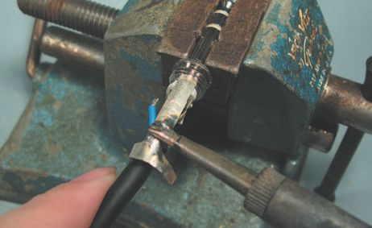
1 Basic
information
67
Once I have the edge lifted up, I ’ ll grip it with pliers and spread it wider.
Then I ’ ll do the same operation on the other strain relief arm. I ’ m done when both arms are spread widely enough to let the wire just fall out when the conductors are de-soldered.
As the strain relief has already been stressed by bending, I want to do this very gently.
I ’ m using a stereo guitar plug as a more complicated example, so I ’ ll pick one of the conductors, heat the solder tab it ’s attached to, and pull the conductor away as soon as the solder melts ( Figure 1.87 ). Then I ’ ll do the same action for the other conductor.
Figure 1.87 Removing soldered conductors.
Figure 1.88 De-soldering shield.
This still leaves the shield of the wire fi rmly attached to the strain relief arm –
but that ’s our next step ( Figure 1.88 ).
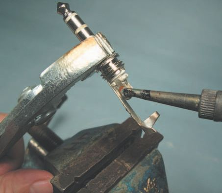
68
Audio Wiring Guide
Figure 1.90 Hitting vise to expel solder.
Figure 1.89 Heating solder tabs.
I ’ ve rotated the plug in the vise, so that the strain relief arm and the attached shield are facing up. Now to heat the shield, until I can pull it loose. With both conductors and the shield detached, the wire will simply fall away.
It ’s a good idea to slide the iron tip back and forth on the strain relief arm, to spread the leftover solder into a thin, smooth fi lm. Any excess can be reheated and struck off when we do the same action for the solder tabs ( Figure 1.89 ).
Just as for the XLR, I ’m holding the connector in a pair of pliers, heating each tab up to melt point, and then hitting the vise, as shown in Figure 1.90 , to strike off any excess solder. For a stereo guitar plug, I ’ ll do this twice for the solder tabs and a third time (if needed) for any excess solder on the strain relief arm itself.
This action will cause the molten solder to fl y off the solder tab and (hopefully) down onto the vise or the tabletop, just as it did for the XLR. The solder will be just as hot, so safety glasses on, cover your exposed skin, and watch which way you fl ing it!
As we ’ ve seen, the actions needed for the two types of connectors shown are very similar. Use your common sense to extrapolate for other types of connectors.
information
69
A word about cleaning things
There ’s an aspect of both soldering and de-soldering that I haven ’t talked about – which is cleaning your work and any connectors you recycle. The reason is, this is almost never done in the fi eld – but it should be done for every connection.
Commercial electronics manufacturers spend good money to de-fl ux their connectors and printed circuit boards. They do so because they know that it extends the life and reliability of their equipment.
This is equally true of any fi eld wiring you do – but despite this, I ’ d guess that more than 99% of fi eld solder work is not de-fl uxed and more than 99%
of recycled connectors are not cleaned before reuse. However, if you want really pure, audiophile-level connections, you should de-fl ux your work.
There are commercial de-fl uxing liquids, or you can use a series of baths and a small, stiff brush – a toothbrush works well.
One good commercial de-fl uxer is made by Caig Laboratories – it ’s
called Flux Wash. More info at: http://store.caig.com/s.nl/it.A/id.2514/.
f?sc & category 1790 . Flux Wash works very well – but that toothbrush helps it along.
When I built 24-track analog recorders we would use three baths and
brushings – acetone, alcohol and plain water. The only problem was fi nding a toothbrush that wouldn ’t melt in the acetone.
Remember that alcohol and acetone are highly fl ammable, and the fumes aren ’t good for you either. Even if you use commercial de-fl uxing liquids, wear gloves, work with good ventilation, and keep all cleaning agents
away from fl ame, heat guns and hot-tempered individuals. Work with small batches and discard the leftover fl uid(s) immediately.
Another aspect of cleaning is that we show work being done with new
wire and new connectors. You folks in the fi eld may be dealing with old, corroded wire and dirty, nasty, old connectors.
That fi lm of corrosion/gunk must be removed before a good solder
connection can be made. You can scrape it off with a blade, fi le it gently, use crocus cloth or even a pencil eraser for delicate items.
But if you see corrosion on either your wire or plugs, it must be removed before attempting to solder. The same applies to dirt, grease and even oil from your fi ngers. If you are not working with new materials, clean the items to be soldered fi rst!
Audio Wiring Guide
The end of the beginning
This is as far as we can go in the introductory section. You ’ ve learned what tools are required, what information must be gathered, and what techniques must be practiced to successfully wire your studio.
We ’ re going to go over some of these topics again in the next section.
This was the overview. Too much detail at once may obscure the general concepts you must learn before specifi c details can become meaningful.
Now it ’s time to study Section 2 – Intermediate Information, and the
connector sections that deal with the specifi c connectors for your particular installation. With a clear game plan, lucid instructions and vivid pictures to guide you, I ’ m sure you ’ ll do well when you get down to work. Good luck and happy wiring!
And before you start wiring, please be sure to practice? It ’s not only the fastest way to Carnegie Hall, it ’s also the fastest way to a well-working studio!
Disclaimer
All techniques and procedures described in this book are used at the
reader ’s own risk. The author and publisher assume no responsibility for any damage or injury incurred by their use.
2
Intermediate Information
This page intentionally left blank
The good/bad/ugly and the
2.1
‘ bead game ’
Some bad examples and a good one
So far, I ’ ve only shown you well-done work – it looks the way it ’s supposed to look. But how will you know what to avoid if I don ’t show you some examples of bad work? Sloppy, shoddy work that no one will admit to
doing, but that somehow occurs all too frequently.
You ’ ve seen the good – and there ’s plenty more of it in Section 3, the modules on specifi c connectors. Here is a brief ‘ rogue ’s gallery ’ of common mistakes. Or maybe I should say ‘ come on missed takes ’ ?
After the ‘ bad guys ’ I want to talk about a technique called ‘ beading ’ . It ’s described in some of the connector modules, like 3.3 (mini-male guitar plug connectors) and 3.7 (TT male connectors), but if you don ’t read those modules you might miss it. And beading is an important technique; sometimes it ’s not possible to add solder while heating a conductor – the strands of the conductor have to carry an extra ‘ payload ’ of solder. That ’s what beading is for.
But back now to our ‘ usual suspects ’ , the most common errors of bad soldering – the typical villains. And after I show you all the wrong ways, I ’ ll show you a good solder connection to inspire you.
Hehe, sure is too much
solder there in Figure 2.1.1 ,
right? That elephantine
blob of solder, looking like
a large metal goiter, may be
exaggerated, but I ’ m trying
to make a point. Use only
enough solder to fi ll the
solder cup, allowing for the
amount of solder that the wire
will displace when it ’s inserted
into the solder cup – not too
much solder, not too little.
Figure 2.1.1 Too much solder.
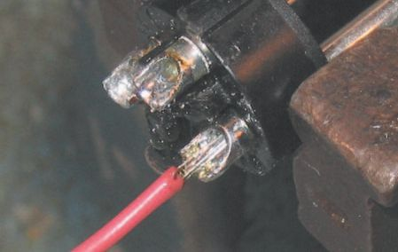
74
Audio Wiring Guide
Speaking of too little solder, a classic example is seen in Figure 2.1.2 . This solder job has another problem too. The conductor has too much exposed metal. The insulation should go right up to the edge of the solder cup.
Figure 2.1.2 Too little solder.
An even more extreme case of ‘ too much exposed metal ’ is illustrated in Figure 2.1.3 . This weakens the solder joint and can short to adjacent conductors.
Figure 2.1.3 Exposed metal.
In Figure 2.1.4 the insulation has been inserted too deeply in the solder cup. This can cause contamination of the solder joint with the plastic of the insulation, degrading its conductivity. Not too deep, not too far outside the cup either. Remember Goldilocks and the three bowls of porridge? There ’s a position that ’s ‘ just right ’ .
2.1 The good/bad/ugly and the ‘bead game’
75
Figure 2.1.4 Insulation too deep.
See the gray, mottled color/texture of the solder in Figure 2.1.5 ? That ’s a sure sign of a ‘ cold ’ solder joint. It is physically weaker and higher in resistance than a properly done connection. If one of your joints looks like this, it won ’t help to add more solder! Instead, you have to take all the old solder out and re-tin the solder cup with fresh solder. Once solder has been overheated, or re-re-re-reheated, its conductivity and strength are degraded. It must be replaced.
Figure 2.1.5 Cold solder joint – 1.
A cold solder joint isn ’t the only problem in Figure 2.1.5 . There ’s too much exposed metal and the solder distribution in the solder cup is uneven – too much on the right-hand side and not enough on the left-hand side.

76
Audio Wiring Guide
To top it all off, the conductor ’s been overheated – we can see the insulation beginning to melt back.